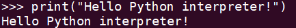

Python语言基础
第一章 起步
1.1 在解释器中运行Python代码片段
- 第一步，启动Python解释器，在命令行执行命令python3
python3
- 第二步，在终端会话中运行Python代码
>>> print("Hello Python interptrter!")
运行结果如下：

- 第三步，关闭Python解释器，可按Ctrl + D或执行命令exit()
1.2 运行Python程序
- 第一步，创建python_work文件夹
mkdir python_work
- 第二步，创建hello_world.py文件
touch hello_world.py
- 第三步，在hello_world.py中添加代码
print("Hello Python world!")
- 第四步，执行 python3 hello_world.py
python3 hello_world.py
运行结果如下：
第二章 变量和简单数据类型
2.1 变量
2.1.1 变量的命名和使用
在Python中使用变量时，需要遵守一些规则和指南。违反这些规则将引发错误，而指南旨在让你编写的代码更容易阅读和理解。 - 变量名只能包含字母、数字和下划线。变量名能以字母或下划线打头，但不能以数字打头。例如，可将变量命名为message_1，但不能将其命名为1_message。 - 变量名不能包含空格，但能使用下划线来分隔其中的单词。例如，变量名greeting_message可行，但变量名greeting message会引发错误。 - 不要将Python关键字和函数名用作变量名，即不要使用Python保留用于特殊用途的单词，如print。 - 变量名应即简短又具有描述性，例如，name比n好，student_name比s_n好，name_length比length_of_persons_name好。 - 慎用小写字母l和大写字母O，因为它们可能被人错看成数字1和0。 要创建良好的变量名，需要经过一定的实践，在程序复杂而有有趣时尤其如此。随着编写的程序越来越多，并开始阅读别人编写的代码，你将越来越善于创建有意义的变量名。 注意：就目前而言，应使用小写的Python变量名。虽然在变量名中使用大写字母不会导致错误，但是大写字母在变量名中有特殊含义。
2.2 字符串
在Python中，用引号括起的都是字符串，其中的引号可以是单引号，也可以是双引号，如下所示：
"This is a string." 'This is also a string.'
这种灵活性让你能够在字符串中包含引号和撇号：
'I told my friend,"Python is my favorite language!"' "The language 'Python' is named after Month Python, not the snake." "One of Python's strengths is its diverse and supportive community."
2.2.1 字符串相关函数
- 将字符串改写为全部大写或全部小写，可以像下面这样做：
name = "Ada Lovelace"
print(name.upper())
print(name.lower)
2.2.2 在字符串中使用变量
在有些情况下，可能想在字符串中使用变量的值。例如下面的程序: full_name.py
first_name = "chen"
last_name = "zhuo"
full_name = f"{first_name} {last_name}"
print(full_name)
要在字符串中插入变量的值，可在前引号前加上字母f，再将要插入的变量放在花括号内。这样，当Python显示字符串时，将把每个变量都替换为其值。
这种字符串名为f字符串。f是format（设置格式）的简写，因为Python通过花括号内的变量替换为其值来设置字符串的格式。上诉代码的输出如下:
chen zhuo
注意
f字符串是Python3.6引入的。如果你使用的是Python3.5或更早的版本，需要使用format()方法，而非这种f语法。要使用方法format()，可在圆括号内列出要在字符串中使用的变量。对于每个变量，都通过一对花括号来引用。这样将按顺序将这些花括号替换为圆括号内列出的变量的值，如下所示:
full_name = "{} {}".format(first_name, last_name)
2.3 数据类型
2.3.1 整数
在Python中，可对整数执行加(+)、减(-)、乘(*)、除(/)运算。
>>> 2 + 35>>> 3 -21>>> 2 * 36>>> 3/ 21.5 乘方运算，例如计算3的2次方:3 ** 29
2.3.2 浮点数
Python将所有带小数点的数称为浮点数。大多数编程语言使用了这个术语，它指出了这样一个事实：小数点可以出现在数的任何位置。每种编程语言都必须细心设计，以妥善地处理浮点数，确保不管小数点出现在什么位置，数的行为都是正常的。 从很大程度上说，使用浮点数时无须考虑其行为。你只要输入要使用的数，Python通常会按照期望的方式处理它们:
>>> 0.1 + 0.10.2>>> 2 * 0.10.2 但需要注意的是，结果包含的小数位可能是不确定的:>>> 0.2 + 0.10.30000000000000004>>> 3 * 0.10.30000000000000004 所有语言都存在这种问题，没有什么可担心的。Python会尽力找到一种精确表示结果的方法，但鉴于计算机内部表示数的方式，这在有些情况下很难。
2.3.3 整数和浮点数
将任意两个数相除时，结果总是浮点数，即便这两个数都是整数且能整除:
>>> 4 / 22.0
在其他任何运算中，如果一个操作数是整数，另一个操作数是浮点数，结果也总数浮点数:
>>> 1 + 2.03.0>>> 2 * 3.06.0
无论是哪种运算，只要有操作数是浮点数，Python默认得到的总是浮点数，即便结果原本为整数也是如此。
2.3.4 数中的下划线
书写很大的数时，可使用下划线将其中的数字分组，使其更清晰易读:
>>> universe_age = 14_000_000_000当你打印这种使用下划线定义的数时，Python不会打印其中的下划线:print(universe_age)14000000000
这是因为存储这种数时，Python会忽略其中的下划线。将数字分组时，即便不是将每三位分成一组，也不会影响最终的值。
在Python看来，1000与1_000没什么不同，1_000与10_00也没什么不同。这种表示法适用于整数和浮点数，但只有Python3.6和更高的版本支持。
2.3.5 同时给多个变量赋值
可在一行代码中给多个变量赋值，这有助于缩短程序并提高其可读性。这种做法最常见于将一系列数赋给一组变量。 例如，
x, y, z = 0, 1, 2
这样做时，需要用逗号将变量名分开；对于要赋给变量的值，也需要同样处理。Python将按照顺序将每个值给对应的变量。只要变量和值的个数相同，Python就能正确地将它们关联起来。
2.3.6 常量
常量类似于变量，但其值在程序的整个生命周期内保持不变。Python没有内置的常量类型，但Python程序员会使用全大写来指出应将某个变量视为常量，其值应始终不变:
MAX_CONNECTIONS = 5000
在代码中，要指出应将特定的变量视为常量，可将其字母全部大写。
2.4 注释
在大多数编程语言中，注释是一项很有用的功能。随着程序越来越大、越来越复杂，就应在其中添加说明，对你解决问题的方法进行大致的阐述。注释让你能够使用自然语言在程序中添加说明。
2.4.1 如何编写注释
在Python中，注释用井号（#）标识。井号后面的内容都会被Python解释器忽略，如下所示：
# 这是一行注释
print("hello world")
Python解释器将忽略第一行，只执行第二行。
第三章 列表简介
3.1 列表是什么
列表由一系列按特定顺序排列的元素组成。你可以创建包含字母表中所有字母、数字0-9或所有家庭成员姓名的列表；也可以将任何东西加入列表中，其中的元素之间可以没有任何关系。列表通常包含多个元素，因此给列表指定一个表示复数的名称（如etters、digits或names）是个不错的主意。 在Python中，用方括号（[]）表示列表，并用逗号分隔其中的元素。下面是一个简单的列表示例:
# cities.py
cities = ['wuhan', 'xiangyang', 'jinzhou', 'huanggang']
print(cities)
如果让Python将列表打印出来，Python将打印列表的内部表示，包括方括号:
['wuhan', 'xiangyang', 'jinzhou', 'huanggang']
下面来学习如何访问列表元素。
3.1.1 访问列表元素
列表是有序集合，因此要访问列表的任意元素，只需将该元素的位置（索引）告诉Python即可。要访问列表元素，可指出列表名称，再指出元素的索引，并将后者放在方括号内。 例如，输出上诉城市列表中第一个城市的名称:
cities = ['wuhan', 'xiangyang', 'jinzhou', 'huanggang']
print(cities[0])
当你请求获取列表元素时，Python只返回该元素，而不包括方括号:
wuhan
3.1.2 索引从0而不是1开始
在Python中，第一个列表元素的索引为0，而不是1。多数编程语言是如此规定的，这与操作列表的底层实现相关。 第二个列表元素的索引为1。根据这种简单的计数方式，要访问列表的任何元素，都可将其位置减1，并将结果作为索引。例如，要访问第四个列表元素，可使用索引3。
cities = ['wuhan', 'xiangyang', 'jinzhou', 'huanggang']
print(cities[3])
上述代码输出第四个元素的值
huanggang
Python为访问最后一个列表元素提供了一种特殊语法。通过将索引指定为-1，可让Python返回最后一个列表元素。 这种语法很有用，因为你经常需要在不知道列表长度的情况下访问最后的元素。这种约定也适用于其他负数。例如，索引-2返回倒数第二个列表元素，索引-3返回倒数第三个列表元素，以此类推。
cities = ['wuhan', 'xiangyang', 'jinzhou', 'huanggang']
print(cities[-1])
print(cities[-2])
print(cities[-3])
上述代码输出为
huanggang
jinzhou
xiangyang
3.1.3 使用列表中的各个值
可以像使用其他变量一样使用列表中的各个值。例如，可以使用f字符串根据列表中的值来创建消息。
下面尝试从列表中提取出第一个元素，并用这个元素的值创建一条消息:
cities = ['wuhan', 'xiangyang', 'jinzhou', 'huanggang']
message = f"the first cities is {cities[0]}."
print(message)
我们使用cities[0]的值生成了一个句子，并将其值赋给变量message。
上述代码输出为
the first cities is wuhan.
3.2 修改、添加和删除元素
3.2.1 修改列表元素
修改列表元素的语法与访问列表元素的语法类似。要修改列表元素，可指定列表名和要修改的元素的索引，再指定元素的新值。 例如，修改上述列表中第一个元素的值
cities = ['wuhan', 'xiangyang', 'jinzhou', 'huanggang']
print(cities)
cities[0] = 'shiyan'
print(cities)
首先定义一个城市列表，其中的第一个元素为wuhan。接下来，将第一个元素的值改为shiyan。输出表示，第一个元素的值确实变了，但其他列表元素的值没变:
['wuhan', 'xiangyang', 'jinzhou', 'huanggang']
['shiyan', 'xiangyang', 'jinzhou', 'huanggang']
可以修改任意列表元素的值，而不仅仅是第一个元素的值。
3.2.2 在列表中添加元素
可能处于众多原因要在列表中添加新元素，Python提供了多种在既有列表中添加新数据的方式。
1. 在列表末尾添加元素
在列表中添加新元素时，最简单的方式是将元素附加(append)到列表。给列表附加元素时，它将添加到列表末尾。继续使用上述的列表，在其末尾添加shiyan。
cities = ['wuhan', 'xiangyang', 'jinzhou', 'huanggang']
print(cities)
cities.append('shiyan')
print(cities)
方法append()将元素shiyan添加到列表末尾，而不影响列表中的其他所有元素:
['wuhan', 'xiangyang', 'jinzhou', 'huanggang']
['wuhan', 'xiangyang', 'jinzhou', 'huanggang', 'shiyan']
方法append()让动态地创建列表易如反掌。例如，你可以先创建一个空列表，再使用一系列函数调用append()来添加元素。
下面来创建一个空列表，再在其中添加元素wuhan、xiangyang、jinzhou、huanggang
cities = []
cities.append('wuhan')
cities.append('xiangyang')
cities.append('jinzhou')
cities.append('huanggang')
print(cities)
最终的列表与前述示例中的列表完全相同:
['wuhan', 'xiangyang', 'jinzhou', 'huanggang']
这种创建列表的方式极其常见，因为经常要等程序运行后，你才能知道用户要在程序中存储那些数据。为控制用户输入，可首先创建一个空列表，用于存储用户将要输入的值，然后将用户提供的每个新值附加到列表中。
- 在列表中插入元素
使用方法insert()可在列表的任何位置添加新元素。为此，你需要指定新元素的索引和值。
insert(pos, val)
cities = ['wuhan', 'xiangyang', 'jinzhou', 'huanggang']
cities.insert(0, 'shiyan')
print(cities)
在这个示例中，值shiyan被插入到了列表开头。方法insert()在索引0出添加空间，并将值shiyan存储到这个地方。这种操作将列表中既有的每个元素都右移一个位置:
['shiyan', 'wuhan', 'xiangyang', 'jinzhou', 'huanggang']
3.2.3 从列表中删除元素
经常需要从列表中删除一个或多个元素，Python提供了多种删除元素的方式。 1. 使用del语句删除元素 如果知道要删除元素在列表中的位置，可使用del语句。
cities = ['wuhan', 'xiangyang', 'jinzhou', 'huanggang']
print(cities)
del cities[0]
print(cities)
上述代码使用del删除了列表cities中的第一个元素wuhan。
['wuhan', 'xiangyang', 'jinzhou', 'huanggang']
['xiangyang', 'jinzhou', 'huanggang']
使用del可删除任意位置处的列表元素，条件是知道其索引。
- 使用方法pop()删除元素 有时，需要将元素从列表中删除，并返回其值。可以使用pop()方法。 术语弹出(pop)源自这样的类比:列表就像一个栈，而删除列表末尾的元素相当于弹出栈顶元素。
cities = ['wuhan', 'xiangyang', 'jinzhou', 'huanggang']
print(cities)
delete_city = cities.pop()
print(cities)
print(delete_city)
首先定义并打印列表cities。接下来，从这个列表中弹出一个值，并将其值赋给变量delete_city。然后打印这个列表，以核实从中删除了一个值。最后打印弹出的值，以证明任能访问被删除的值。
上述代码输出如下:
['wuhan', 'xiangyang', 'jinzhou', 'huanggang']
['wuhan', 'xiangyang', 'jinzhou']
huanggang
- 弹出列表中任何位置处的元素 实际上，可以使用pop()来删除列表中任意位置的元素，只需要在圆括号中指定要删除元素的索引即可。 例如，删除列表中第二个元素:
cities = ['wuhan', 'xiangyang', 'jinzhou', 'huanggang']
print(cities)
delete_city = cities.pop(1)
print(cities)
print(delete_city)
上述代码输出如下:
['wuhan', 'xiangyang', 'jinzhou', 'huanggang']
['wuhan', 'jinzhou', 'huanggang']
xiangyang
如果你不确定该使用del语句还是pop()方法，下面是一个简单的判断标准: 如果你要从列表中删除一个元素，且不再以任何方式使用它，就使用del语句；如果你要在删除元素后还能继续使用它，就使用方法pop()。
- 根据值删除元素
有时候，不知道要从列表中删除的值所处的位置，但是知道要删除元素的值，可使用remove()方法。
例如，删除列表中值为
xiangyang的元素:
cities = ['wuhan', 'xiangyang', 'jinzhou', 'huanggang']
print(cities)
cities.remove('wuhan')
print(cities)
上述代码的输出如下:
['wuhan', 'xiangyang', 'jinzhou', 'huanggang']
['xiangyang', 'jinzhou', 'huanggang']
注意 方法remove()只删除第一个指定的值。如果要删除的值可能在列表中出现多次，就需要使用循环来确保将每个值都删除。
3.3 组织列表
当你创建的列表中，元素的排列顺序常常是无法预测的，因为你并非总能控制用户提供数据的顺序。这虽然在大多数情况下是不可避免的，但你经常需要以特定的顺序呈现信息。有时候，你希望保留列表元素最初的排列顺序，而有时候又需要调整排列顺序。Python提供了很多组织列表的方式，可根据具体情况选用。
3.3.1 使用方法sort()对列表永久排序
Python的sort()方法让你能够较为轻松的对列表进行排序。例如，对列表中的元素按照城市字母顺序排序（假设列表中的所有值都是小写的）。
cities = ['wuhan', 'xiangyang', 'jinzhou', 'huanggang']
cities.sort()
print(cities)
方法sort()永久性地修改列表元素的排列顺序。现在，城市是按字母顺序排列的，再也无法恢复到原来的排列顺序:
['huanggang', 'jinzhou', 'wuhan', 'xiangyang']
还可以按与字母顺序相反的顺序排列列表元素，只需向sort()方法传递参数reverse=True即可。下面的示例将城市列表按与字母顺序相反的顺序排列:
cities = ['wuhan', 'xiangyang', 'jinzhou', 'huanggang']
cities.sort(reverse=True)
print(cities)
同样，对列表元素排列顺序的修改是永久性的:
['xiangyang', 'wuhan', 'jinzhou', 'huanggang']
3.3.2 使用函数sorted()对列表临时排序
要保留列表元素原来的排列顺序，同时以特定的顺序呈现它们，可使用函数sorted()。函数sorted()让你能够按特定顺序显示列表元素，同时不影响它们在列表中的原始排列顺序。下面尝试对城市列表调用这个函数:
cities = ['wuhan', 'xiangyang', 'jinzhou', 'huanggang']
print("Here is the original list:")
print(cities)
print("\nHere is the sorted list:")
print(sorted(cities))
print("\nHere is the original list again:")
print(cities)
首先按原始顺序打印列表，再按字母顺序显示该列表。以特定顺序显示列表后，我们进行核实，确定列表元素的排列顺序与以前相同:
Here is the original list:
['wuhan', 'xiangyang', 'jinzhou', 'huanggang']
Here is the sorted list:
['huanggang', 'jinzhou', 'wuhan', 'xiangyang']
Here is the original list again:
['wuhan', 'xiangyang', 'jinzhou', 'huanggang']
注意
调用函数sorted()后，列表元素的排列顺序并没有变。如果要按与字母相反的顺序显示列表，也可向函数sorted()传递参数reverse=True。
注意 在并非所有值都是小写时，按字母顺序排列列表要复杂些。决定排列顺序时，有多种解读大写字母的方式，要指定准确的排列顺序，可能比我们这里所做的要复杂。然而，大多数排列方式是以本节介绍的知识为基础的。
3.3.3 倒着打印列表
要反转列表元素的排列顺序，可使用方法reverse()。 例如，反转城市列表:
cities = ['wuhan', 'xiangyang', 'jinzhou', 'huanggang']
print(cities)
cities.reverse()
print(cities)
注意，reverse()不是按与字母顺序相反的顺序排列列表元素，而只是反转列表元素的排列顺序:
['wuhan', 'xiangyang', 'jinzhou', 'huanggang']
['huanggang', 'jinzhou', 'xiangyang', 'wuhan']
方法reverse()永久性的修改列表元素的排列顺序，但可随时恢复到原来的排列顺序，只需要对列表再次调用reverse()即可。
3.3.4 确定列表的长度
使用函数len()可快速获悉列表的长度。 例如，获取城市列表的长度:
cities = ['wuhan', 'xiangyang', 'jinzhou', 'huanggang']
cities_len = len(cities)
print(f"the length of cities is {cities_len}")
上述代码输出如下:
the length of cities is 4
第四章 操作列表
4.1 遍历整个列表
如果需要遍历列表的所有元素，对每个元素执行相同的操作，可使用Python中的for循环。
for iterating_var in sequence:
statements(s)
下面使用for循环打印城市列表中的每个城市名字:
cities = ['wuhan', 'xiangyang', 'jinzhou', 'huanggang']
for city in cities:
print(city)
首先，定义一个列表。接下来，定义一个for循环。这行代码让Python从列表cities中取出一个名字，并将其与变量city相关联。最后，让Python打印前面赋给变量city的名字。这样，对于列表中的每个名字，Python都将重复执行打印的代码。
上述代码输出如下所示:
wuhan
xiangyang
jinzhou
huanggang
4.1.1 深入研究循环
循环这种概念很重要，因为它是让计算机自动完成重复工作的常见方式之一。 刚开始使用循环时请牢记，对列表中的每个元素，都将执行循环指定的步骤，而不管列表包含多少个元素。 另外，编写for循环时，可以给依次与列表中每个值相关联的临时变量指定任意名称。然而，选择描述单个列表元素的有意义名称大有裨益。例如，对于小猫列表、小狗列表和一般性列表，像下面这样编写for循环的第一行代码是不错的选择:
for cat in cats:
for dog in dogs:
for item in list_of_items
这些命名约定有助于你明白for循环中将每个元素执行的操作。使用单数和复数式名称，可帮助你判断代码段处理的是单个列表元素还是整个列表。
4.2 创建数值列表
需要存储一组数的原因有很多。例如，在游戏中，需要跟踪每个角色的位置，还可能需要跟踪玩家的几个最高得分；在数据可视化中，处理的几乎都是由数（如温度、距离、人口数量、经度和维度等）组成的集合。 列表非常适合用于存储数字集合，而Python提供了很多工具，可帮助你高效的处理数字列表。明白如何有效的使用这些工具后，即便列表包含百万个元素，你编写的代码也能运行的很好。
4.2.1 使用函数range()
Python函数range()让你能够轻松生成一系列数。例如，可以像下面这样使用函数range()来打印一系列数:
for value in range(1,5):
print(value)
上述代码好像应该打印数1~5，但实际上不会打印5:
1
2
3
4
在这个示例中，range()只打印数1~4。这是编程语言常见的差一行的结果。函数range()让Python从指定的第一个值开始数，并在到达你指定的第二个值时停止。因为它在第二个值处停止，所以输出不包括该值。
4.2.2 使用range()创建数字列表
要创建数字列表，可使用函数list()将range()的结果直接转换为列表。如果将range()作为list()的参数，输出将是一个数字列表。 在上节中，只是将一系列数打印出来。要将这组数转换为列表，可使用list():
numbers = list(range(1, 6))
print(numbers)
结果如下:
[1, 2, 3, 4, 5]
使用函数range()时，还可指定步长。为此，可给这个函数指定第三个参数，Python将根据这个步长来生成数。
例如，下面的代码打印1~10的偶数:
even_numbers = list(range(2, 11, 2))
print(even_numbers)
在这个示例中，函数range()从2开始数，然后不断加2，直到达到或超过终值(11)，因此输出如下:
[2, 4, 6, 8, 10]
使用函数range()几乎能够创建任何需要的数集。例如，如何创建一个列表，其中包含前10个整数(1~10)的平方呢？在Python中，用两个星号(**)表示乘方运算。下面的代码演示了如何将前10个整数的平方加入一个列表中:
squares = []
for value in range(1, 11):
square = value ** 2
squares.append(square)
print(squares)
首先，创建一个名为squares的空列表。接下来，使用函数range()让Python遍历1~10的值。在循环中，计算当前值的平方，并将结果赋给变量square。然后，将新计算得到的平方值附加到列表squares末尾。最后，循环结束后，打印列表squares:
[1, 4, 9, 16, 25, 36, 49, 64, 81, 100]
为了让代码更简洁，可不使用临时变量square，而直接将每个计算得到的值附加到列表末尾:
squares = []
for value in range(1, 11):
squares.append(value ** 2)
print(squares)
创建更复杂的列表时，可使用上述两种方法中的任何一种。有时候，使用临时变量会让代码更易读；而在其他情况下，这样做只会让代码无谓的变长。你首先因应该考虑的是，编写清晰易懂且能完成所需功能的代码，等到审核代码时，再考虑采用更高效的方法。
4.2.3 对数字列表执行简单的统计计算
有几个专门用于处理数字列表的Python函数。例如，你可以使用max()函数求最大值、使用min()函数求最小值以及使用sum()函数对列表中各数字求和。
digits = [1, 2, 3, 4, 5, 6, 7, 8, 9, 10]
# 求列表元素的最大值
max_val = max(digits)
print(f"the max value is {max_val}")
# 求列表元素的最小值
min_val = min(digits)
print(f"the min value is {min_val}")
# 求列表各元素之和
sum_val = sum(digits)
print(f"the sum of digits is {sum_val}")
上述代码输出结果为:
the max value is 10
the min value is 1
the sum of digits is 55
4.2.4 列表解析
前面介绍的生成列表squares的方式包含三四行代码，而列表解析让你只需编写一行代码就能生成这样的列表。列表解析将for循环和创建新元素的代码合并成一行，并自动附加新元素。 下面的示例使用列表解析创建前面看到的平方数列表:
squares = [valie ** 2 for value in range(1, 11)]
print(squares)
要使用这种语法，首先指定一个描述性的列表名，如squares。然后，指定一个左方括号，并定义一个表达式，用于生成要存储到列表中的值。在这个示例中，表达式为value ** 2，它计算平方值。接下来，编写一个for循环，用于给表达式提供值，再加上右方括号。在这个示例中，for循环为for value in range(1, 11)，它将值1~10提供给表达式value ** 2。请注意，这里for语句末尾没有冒号。
结果与前面的平方数列表相同:
[1, 4, 9, 16, 25, 36, 49, 64, 81, 100]
要创建自己的列表解析，需要经过一定的练习，但能够熟练的创建常规列表后，你会发现这样做完全是值得的。当你觉得编写三四行代码来生成列表有点反腐时，就应该考虑创建列表解析了。
4.3 使用列表的一部分
在前面学习了如何访问单个列表元素以及如何处理列表的所有元素。同时还可以处理列表的部分元素，Python称之为切片。
4.3.1 切片
要创建切片，可指定要使用的第一个元素和最后一个元素的索引。与函数range()一样，Python在到达第二个索引之前的元素后停止。要输出列表中的前三个元素，需要指定索引0和3，这将返回索引为0、1和2的元素。 下面的示例处理的是一个城市列表:
cities = ['wuhan', 'xiangyang', 'jinzhou', 'huanggang']
print(cities[0:3])
上述代码打印该列表的一个切片，其中只包含三个城市。输出也是一个列表，其中包含前三个城市:
['wuhan', 'xiangyang', 'jinzhou']
你可以生成列表的任意子集。例如，如果要提取列表的第二和第三个元素，可将起始索引指定为1，并将终止索引指定为3:
cities = ['wuhan', 'xiangyang', 'jinzhou', 'huanggang']
print(cities[1:3])
上述代码输出为:
['xiangyang', 'jinzhou']
如果没有指定第一个索引，Python将自动从列表开头开始:
cities = ['wuhan', 'xiangyang', 'jinzhou', 'huanggang']
print(cities[:3])
上述代码输出为:
['wuhan', 'xiangyang', 'jinzhou']
要让切片终止于列表末尾，也可使用类似的语法。例如，如果要提取从第三个元素到列表末尾的所有元素，可将起始索引指定为2，并省略终止索引:
cities = ['wuhan', 'xiangyang', 'jinzhou', 'huanggang']
print(cities[2:])
Python将返回从第三个元素到列表末尾的所有元素:
['jinzhou', 'huanggang']
无论列表多长，这种语法都能够让你输出从特定位置到列表末尾的所有元素。
上节讲到，负数索引返回离列表末尾相应距离的元素，因此你可以输出列表末尾的任意切片。例如，如果要输出城市列表的最后三个城市，可使用切片cities[-3:]
注意
可在表示切片的方括号内指定第三个值。这个值告诉Python在指定范围内每隔多少元素提取一个。
4.3.2 遍历切片
如果要遍历列表的部分元素，可在for循环中使用切片。 下面的示例遍历列表的前三个城市，并打印:
cities = ['wuhan', 'xiangyang', 'jinzhou', 'huanggang']
print("Here are the first three cities:")
for city in cities[:3]:
print(city)
上述的代码没有遍历整个城市列表，而是只遍历前三个城市:
wuhan
xiangyang
jinzhou
4.3.3 复制列表
我们经常需要根据既有列表创建全新的列表。要复制列表，可创建一个包含整个列表的切片，方法是同时省略起始索引和终止索引([:])。这让Python创建一个始于第一个元素，终止于最后一个元素的切片，即整个列表的副本。
cities = ['wuhan', 'xiangyang', 'jinzhou', 'huanggang']
# 从cities中提取一个切片，从而创建了一个副本，并将副本赋予cities_1
cities_1 = cities[:]
# 将cities_2变量于cities变量关联
cities_2 = cities
4.4 元组
列表非常适合用于存储在程序运行期间可能变化的数据集。列表是可以修改的，这对处理网站的用户列表或游戏中的角色列表至关重要。然而，有时候你需要创建一系列不可修改的元素，元组可以满足这种需求。Python将不能修改的值称为不可变的，而不可变的列表称为元组。
4.4.1 定义元组
元组看起来很像列表，但使用圆括号而非中括号标识。定义元组后，就可使用索引来访问其元素，就像访问列表元素一样。 例如，如果有一个大小不应改变的矩形，可将其长度和宽度存储在一个元组中，从而确保它们是不能修改的:
dimensions = (200, 50)
print(dimensions[0])
print(dimensions[1])
首先定义元组dimensions，为此使用圆括号而不是方括号。接下来，分别打印该元组的各个元素，使用的语法与访问列表元素时使用的语法相同:
200
50
下面来尝试修改元组dimensions的一个元素，看看结果如何:
dimensions = (200, 50)
dimensions[0] = 100
上诉代码试图修改第一个元素的值，导致Python返回类型错误消息。由于试图修改元组的操作是被禁止的，因此Python指出不能给元组的元素赋值:
Traceback (most recent call last):
File "/home/superman/python_work/cities.py", line 2, in <module>
dimensions[0] = 100
TypeError: 'tuple' object does not support item assignment
这很好，因为我们希望Python在代码试图修改矩形尺寸时引发错误。 注意 严格的说，元组是由逗号标识的，圆括号只是让元组看起来更整洁、更清晰。如果要定义包含一个元素的元组，必须在这个元素后面加上逗号:
my_t = (3,)
创建只包含一个元素的元组通常没有意义，但自动生成的元组有可能只有一个元素。
4.4.2 遍历元组中的所有值
像列表一样，也可以使用for循环来遍历元组中的所有制:
dimensions = (200, 50)
for dimension in dimensions:
print(dimension)
就像遍历列表时一样，Python返回元组中所有的元素:
200
50
4.4.3 修改元组变量
虽然不能修改元素的元素，但可以给存储元组的变量赋值。因此，如果要修改前述矩形的尺寸，可重新定义整个元组:
dimensions = (200, 50)
print("Original dimensions:")
print(dimensions)
# 给元组变量重新赋值
dimensions = (400, 100)
print("Modified dimensions:")
print(dimensions)
首先定义一个元组，并将其存储的尺寸打印出来。接下来，将一个新元组关联到变量dimensions。然后，打印新的尺寸。这次，Python不会引发任何错误，因为给元组变量重新赋值是合法的:
Original dimensions:
(200, 50)
Modified dimensions:
(400, 100)
相比于列表，元组是更简单的数据结构。如果需要存储的一组值在程序的整个生命周期内都不变，就可以使用元组。
第五章 if语句
编程时经常需要检查一系列条件，并据此决定采取什么措施。在Python中，if语句让你能够检查程序的当前状态，并采取相应的措施。
5.1 一个简单示例
下面是一个简短的示例，演示了如何使用if语句来正确的处理特殊情形。假如你有一个汽车列表，并想将其中每辆汽车的名称打印出来。对于大多数汽车，以小写方式打印其名称，但是对于汽车bmw，应以全大写的方式打印。程序示例如下所示:
cars = ['audi', 'bmw', 'subaru', 'toyota']
for car in cars:
if car == 'bmw':
print(car.upper())
else:
print(car)
这个示例中的循环首先检查当前的汽车是否是bmw。如果是，就以全大写方式打印，否则以小写方式打印:
audi
BMW
subaru
toyota
5.2 条件测试
每条if语句的核心都是一个值为True或False的表达式，这种表达式称为条件测试。Python根据条件测试的值为True还是False来决定是否执行if语句中的代码。如果条件测试的值为True，Python就执行紧跟在if语句后面的代码；如果为False，Python就忽略这些代码。
5.2.1 检查是否相等
大多数条件测试将一个变量的当前值同特定值进行比较。
car == 'bmw'
使用两个等号(==)检查car的值是否为'bmw'。这个相等运算符在两边的值相等时返回True，否则返回False。
注意区分赋值运算符和相等运算符
car = 'bmw'，是将'bmw'的值赋值给变量car
car == 'bmw'，是判断car的值是否等于'bmw'
5.2.2 检查是否不相等
要判断两个值是否不等，可使用!=运算符。
注意 大多情况下检查两个值是否相等，但有时候检查两个值是否不等的效率更高。
5.2.3 Python比较运算符
| 运算符 | 名称 | 描述 | 实例 |
|---|---|---|---|
| == | 等于 | 比较对象是否相等 | (a == b) 返回True |
| != | 不等于 | 比较两个对象是否不相等 | (a != b) 返回True |
| > | 大于 | 返回x是否大于y | (a > b) 返回True |
| < | 小于 | 返回x是否小于y | (a < b) 返回True |
| >= | 大于等于 | 返回x是否大于或等于y | (a >= b) 返回True |
| <= | 小于等于 | 返回x是否小于或等于y | (a <= b) 返回True |
5.2.4 Python逻辑运算符
| 运算符 | 逻辑表达式 | 描述 | 实例 |
|---|---|---|---|
| and | x and y | 逻辑与，当x和y都为True时才返回True，否则返回False |
(a and b) |
| or | x or y | 逻辑或，当x或y有一个为True时返回True，若都为False则返回False |
a or b |
| not | not x | 逻辑非，当x为True时返回False,当x为False时返回True |
not a |
5.2.5 检查特定值是否包含在列表中
有时候，执行操作前必须检查列表是否包含特定的值。例如，结束用户的注册过程前，可能需要检查提供的用户名是否包含在用户列表中。在地图程序中，可能需要检查用户提交的位置是否包含在已知位置列表中。 要判断特定的值是否已包含在列表中，可使用关键字in。 下面判断特定的城市是否在城市列表中:
cities = ['wuhan', 'xiangyang', 'jinzhou', 'huanggang']
print('wuhan' in cities)
print('shiyan' in cities)
上述代码输出为:
True
False
5.2.6 检查特定值是否不包含在列表中
还有些时候，确定特定的值未包含在列表中很重要。在这种情况下，可使用关键字not in。 例如，有一个列表，其中包含被禁止在论坛上发表评论的用户，可以在允许用户提交评论前检查他是否被禁言:
banned_users = ['andrew', 'carolina', 'david']
user = 'marie'
if user not in banned_users:
print(f"{user}, you can post a response if you wish.")
上述代码明白易懂: 如果user的值未包含在列表banned_users中，Python将返回True，进而执行缩进的代码行。
用户'marie'未包含在列表banned_users中，因此她将看到一条邀请她发表评论的消息:
marie, you can post a response if you wish.
5.2.7 布尔表达式
随着你对编程的了解越来越深入，将遇到术语布尔表达式，它不过是条件测试的别名。与条件表达式一样，布尔表达式的结果要么为True，要么为False。 布尔值通常用于记录条件，如游戏是否正在运行，或者用户是否可以编辑网站的特定内容:
game_active = True
can_edit = False
在跟踪程序状态或程序中重要的条件方面，布尔值提供了一种高效的方式。
5.3 if语句
5.3.1 简单的if语句
if 判断条件:
执行语句
5.3.2 if-else语句
if 判断条件:
执行语句
else:
执行语句
5.3.3 if-elif-else结构
if 判断条件1:
执行语句1
elif 判断条件2:
执行语句2
else
执行语句3
5.3.4 使用多个elif代码块
if 判断条件1:
执行语句1
elif 判断条件2:
执行语句2
elif 判断条件3:
执行语句3
...
else
执行语句n
5.3.5 省略else代码块
Python并不要求if-elif结构后面必须有else代码块。在有些情况下，else代码块很有用；而在其他一些情况下，使用一条elif语句来处理特定的情形更清晰。
if 判断条件1:
执行语句1
elif 判断条件2:
执行语句2
elif 判断条件3:
执行语句3
...
else是一条保罗万象的语句，只要不满足任何if或elif中的条件测试，其中的代码就会执行。这可能引入无效甚至恶意的数据。如果知道最终要测试的条件，应考虑使用一个elif代码块来代替else代码块。这样就可以肯定，仅当满足相应的条件时，代码才会执行。
判断列表是否为空:
request_topping = []
if request_topping:
print("list is not empty")
else:
print("list is empty")
在if语句中将列表元素名用做条件表达式时，Python将在列表至少包含一个元素时返回True，并在列表为空时返回False。
5.3.6 设置if语句的格式
在条件测试的格式方面，PEP 8提供的唯一建议是，在诸如==，>= 和 <=等比较运算符两边各添加一个空格。
例如, if age < 4: 要比 if age<4: 更好。
这样的空格不会影响Python对代码的解读，而只是让代码阅读起来更容易。
第六章 字典
6.1 使用字典
在Python中，字典是一系列键值对。每个键都与一个值相关联，可使用键来访问相关联的值。与键相关联的值可以是数、字符串、列表乃至字典。事实上，可将任何Python对象用作字典中的值。
在Python中，字典用在花括号({})中的一系列键值对表示，例如:
alien = {'color':'green', 'points':5}
键值对是两个相关联的值。指定键时，Python将返回与之相关联的值。键和值之间用冒号分隔，而键值对之间用逗号分隔。在字典中，想存储多少个键值对都可以。 最简单的字典中只有一个键值对，如下所示:
alien = {'color':'green'}
6.1.1 访问字典中的值
要获取与键相关联的值，可依次指定字典名和放在方括号内的键，如下所示:
alien_0 = {'color':'green'}
print(alien_0['color'])
这将返回字典alien_0中与键'color'相关联的值:
green
字典中包含任意数量的键值对。例如，下面的字典alien_0，其中包含两个键值对:
alien_0 = {'color':'green', 'points':5}
现在，你可以访问外星人alien_0的颜色和分数。如果玩家射杀了这个外星人，就可以使用下面的代码来确定应获取多少分:
alien_0 = {'color':'green', 'points':5}
new_points = alien_0['points']
print(f"You just earned {new_points} points!")
上述代码首先定义了一个字典。然后，从这个字典中获取与键'points'相关联的值，并将这个值赋给变量new_points。接下来，将这个整数转换为字符串，并打印一条消息，指出玩家获得了多少分:
You just earned 5 points!
如果在外星人被射杀时运行这段代码，就将获取该外星人的分数。
6.1.2 添加键值对
字典是一种动态结构，可随时在其中添加键值对。要添加键值对，可依次指定字典名、用方括号括起的键和相关联的值。
下面来在字典alien_0中添加两项信息:外星人的x坐标和y坐标，让我们能够在屏幕的特定位置显示该外星人。我们将这个外星人放在屏幕左边缘，且离屏幕顶部25像素的地方。由于屏幕坐标系的原点通常为左上角，要将该外星人放在屏幕左边缘，可将x坐标设置为0；要将该外星人放在离屏幕25像素的地方，可将y坐标设置为25，如下所示:
alien_0 = {'color':'green', 'points':5}
print(alien_0)
alien_0['x_position'] = 0
alien_0['y_position'] = 25
print(alien_0)
首先定义前面一直在使用的字典，然后打印这个字典，以显示其信息快照。然后，我们在此字典中新增了一个键值对，其中的键为x_position，值为0。然后重复这样的操作，但使用的键为y_position。打印修改后的字典时，将看到这两个新增的键值对:
{'color': 'green', 'points': 5}
{'color': 'green', 'points': 5, 'x_position': 0, 'y_position': 25}
这个字典的最终版本包含四个键值对：原来的两个指定外星人的颜色和分数，而新增的两个指定其位置。
注意
在Python3.7中，字典中元素的排列顺序与定义时相同。如果将字典打印出来或遍历其元素，将发现元素的排列顺序与添加顺序相同。
6.1.3 先创建一个空字典
在空字典中添加键值对有时候可能提供遍历，而有时候必须这样做。为此，可先使用一对空花括号定义一个字典，再分行添加各个键值对。例如，下面演示了如何以这种方式创建字典alien_0:
alien_0 = {}
alien_0['color'] = 'green'
alien_0['points'] = 5
print(alien_0)
这里首先定义了空字典alien_0，再在其中添加颜色和分数，得到前述示例一直在使用的字典:
{'color': 'green', 'points': 5}
使用字典来存储用户提供的数据或在编写能自动生成大量键值对的代码时，通常需要先定义一个空字典。
6.1.4 修改字典中的值
要修改字典中的值，可依次指定字典名、用方括号括起的键，以及与该键相关联的新值。例如，假设随着游戏的进行，需要将一个外星人从绿色改为黄色:
alien_0 = {'color':'green'}
print(f"The alien is {alien_0['color']}")
alien_0['colir'] = 'yellow'
print(f"The alien is now {alien_0['color']}.")
首先定义一个表示外星人alien_0的字典，其中只包含这个外星人的颜色。接下来，将与键'color'相关联的值改为'yellow'。输出表明，这个外星人确实从绿色变成了黄色:
The alien is green
The alien is now yellow.
6.1.5 删除键值对
对于字典中不再需要的信息，可使用del语句将相应的键值对彻底删除。使用del语句时，必须指定字典名和要删除的键。 例如，下面的代码从字典alien_0中删除键'points'及其值:
alien_0 = {'color':'green', 'points':5}
print(alien_0)
del alien_0['points']
print(alien_0)
上述代码行让Python将键'points'从字典alien_0中删除，同时删除与这个键相关联的值。输出表明，键'points'及其值5已从字典中删除，但其他键值未受影响:
{'color': 'green', 'points': 5}
{'color': 'green'}
注意
删除的键值对会永远消失。
6.1.6 由类似对象组成的字典
在前面的示例中，字典存储的是一个对象(游戏中的一个外星人)的多种信息，但你也可以使用字典来存储众多对象的同一种信息。例如，假设你要调查很多人，询问他们最喜欢的编程语言，可使用一个字典来存储这种简单调查的结果，如下所示:
favorite_langugaes= {
'jen':'python',
'sarah':'c',
'edward':'ruby',
'phil':'python',
}
如你所见，我们将一个较大的字典放在了多行中。每个键都是一个被调查者的名字，而每个值都是被调查者喜欢的语言。确定需要使用多行来定义字典时，要在输入左花括号后按回车键。在下一行缩进四个空格，指定第一个键值对，并在它后面加上一个逗号。此后再按回车键时，文本编辑器将自动缩进后续键值对，且缩进量与第一个键值对相同。 定义好字典后，在最后一个键值对的下一行添加一个右花括号，并缩进四个空格，使其与字典中的键对齐。一种不错的做法是，在最后一个键值对后面也加上逗号，为以后在下一行添加键值对做好准备。
6.1.7 使用get()来访问值
使用放在方括号内的键从字典中获取感兴趣的值时，可能会引发问题:如果指定的键不存在就会出错。 如果你要获取外星人的分数，而这个外星人没有分数，结果将如何呢？下面来看看:
alien_0 = {'color':'green', 'speed','slow'}
print(alien_0['points'])
这将导致Python显示traceback，指出存在键值错误(KeyError):
Traceback (most recent call last):
File "alien_no_points.py", line 2, in <module>
print(alien_0['points'])
KeyError: 'points'
但就字典而言，可使用方法get()在指定的键不存在时返回一个默认值，从而避免这样的错误。 方法get()的第一个参数用于指定键，是必不可少的；第二个参数为指定的键不存在时要返回的值，是可选的:
alien_0 = {'color':'green', 'speed':'slow'}
point_value = alien_0.get('points', 'No point value assigned.')
如果字典中有键'points'，将获得与之相关联的值；如果没有，将获得指定的默认值。虽然这里没有键'points'，但将获得一条清晰的消息，不会引发错误:
No point value assigned.
如果指定的键有可能不存在，应考虑使用方法get()，而不要使用方括号表示法。
注意
调用get()时，如果没有指定的第二个参数且指定的键不存在，Python将返回值None。这个特殊值表示没有相应的值。None并非错误，而是一个表示所需值不存在的特殊值。
6.2 遍历字典
一个Python字典可能只包含几个键值对，也可能包含百万个键值对。鉴于字典可能包含大量数据，Python支持对字典进行遍历。字典可用于以各种方式存储信息，因此有多种遍历方式: 可遍历字典的所有键值对，也可仅遍历键或值。
6.2.1 遍历所有键值对
探索各种遍历方法前，先来看一个新字典，它用于存储有关网站用户的信息。下面的字典存储一名用户的用户名、名和姓:
user_0 = {
'username':'efermi'
'first':'enrico'
'last':'fermi'
}
利用前面介绍过的知识，可访问user_0的任何一项信息，但如果要获悉该用户字典中的所有信息，该如何办呢？可使用for循环来遍历这个字典:
user_0 = {
'username':'efermi',
'first':'enrico',
'last':'fermi',
}
for key, value in user_0.items():
print(f"\nKey:{key}")
print(f"Value:{value}")
如上所示，要编写遍历字典的for循环，可声明两个变量，用于存储键值对中的键和值。这两个变量可以使用任意名称。下面的代码使用了简单的变量名，这完全可行：
for k, v in user_0.items()
for语句的第二部分包含字典名和方法items()，它返回一个键值对列表。接下来，for循环依次将每个键值对赋给指定的两个变量。
上述代码输出为:
Key:username
Value:efermi
Key:first
Value:enrico
Key:last
Value:fermi
6.2.2 遍历字典中的所有键
在不需要使用字典中的值时，方法keys()很有用。下面来遍历字典favorite_languages，并将每个被调查者的名字都打印出来:
favorite_languages = {
'jen': 'python',
'sarah': 'c',
'edward': 'ruby',
'phil': 'python',
}
for name in favorite_languages.keys():
print(name)
上述代码让Python提取字典favorite_languages中的所有键，并依次将它们赋给变量name。输出列出了每个被调查者的名字:
`jen`
`sarah`
`edward`
`phil`
遍历字典时，会默认遍历所有的键。因此，如果将上述代码中的：
for name in favorite_languages:
替换为:
for name in favorite_languages.keys()
输出将不变。 显示的使用方法keys()可让代码更容易理解，你可以选择这么做，但是也可以省略它。 方法keys()并非只能用于遍历：实际上，它返回一个列表，其中包含字典中的所有键。
6.2.3 按特定顺序遍历字典中的所有键
从Python3.7起，遍历字典时将按插入的顺序返回其中的元素。不过在有些情况下，你可能要按与此不同的顺序遍历字典。 要以特定顺序返回元素，一种办法是在for循环中对返回的键进行排序。为此，可使用函数sorted()来获得按特定顺序排列的键列表的副本:
favorite_languages = {
'jen': 'python',
'sarah': 'c',
'edward': 'ruby',
'phil': 'python',
}
for name in sorted(favorite_languages.keys()):
print(f"{name}, thank you for talking the poll.")
这条for语句类似于其他for语句，不同之处是对方法dictionary.keys()的结果调用了函数sorted()。这让Python列出字典中的所有键，并在遍历前对这个列表进行排序。输出表明，按顺序显示了所有被调查者的名字:
edward, thank you for talking the poll.
jen, thank you for talking the poll.
phil, thank you for talking the poll.
sarah, thank you for talking the poll.
6.2.4 遍历字典中的所有值
如果主要对字典包含的值感兴趣，可使用方法values()来返回一个值列表，不包含任何键。例如，假设我们想获得一个列表，其中只包含被调查者选择的各种语言，而不包含被调查者的名字，可以这样做:
favorite_languages = {
'jen': 'python',
'sarah': 'c',
'edward': 'ruby',
'phil': 'python',
}
print("The following languages have been mentioned:")
for language in favorite_languages.values():
print(language)
这条for语句提取字典中的每个值，并将其依次赋给变量language。通过打印这些值，就获得了一个包含被调查者所选语言的列表:
The following languages have been mentioned:
python
c
ruby
python
这种做法提取字典中所有值，而没有考虑是否重复。涉及的值很少时，这也许不是问题，但如果被调查者很多，最终的列表可能包含大量重复项。为剔除重复项，可使用集合(set)。集合中的每个元素都必须是独一无二的:
favorite_languages = {
--snip--
}
print("The following languages have been mentioned:")
for language in set(favorite_languages.values()):
print(language)
通过对包含重复元素的列表调用set()，可让Python找出列表中独一无二的元素，并使用这些元素来创建一个集合。
结果是一个不重复的列表，其中列出了被调查者提及的所有语言:
The following
languages have been mentioned:
ruby
python
c
6.3 嵌套
有时候，需要将一系列字典存储在列表中，或将列表作为值存储在字典中，这称为嵌套。你可以在列表中嵌套字典、在字典中嵌套列表甚至在字典中嵌套字典。
6.3.1 字典列表
字典alien_0包含一个外星人的各种信息，但无法存储第二个外星人的信息，更别说屏幕上全部外星人的信息了。如何管理成群结队的外星人呢？一种办法是创建一个外星人列表，其中每个外星人都是一个字典，包含有关该外星人的各种信息。例如，下面的代码创建一个包含三个外星人的列表:
alien_0 = {'color':'green', 'points':5}
alien_1 = {'color':'yellow', 'points':10}
alien_2 = {'color':'red', 'points':15}
aliens = [alien_0, alien_1, alien_2]
for alien in aliens:
print(alien)
首先创建三个字典，其中每个字典都表示一个外星人。然后将这些字典都存储到一个名为aliens的列表中。最后，遍历这个列表，并将每个外星人都打印出来:
{'color': 'green', 'points': 5}
{'color': 'yellow', 'points': 10}
{'color': 'red', 'points': 15}
6.3.2 在字典中存储列表
有时候，需要将列表存储在字典中，而不是将字典存储在列表中。例如，你如何描述顾客点的披萨呢？如果使用列表，只能存储要添加的比萨配料；但如果使用字典，就不仅可在其中包含配料列表，还可包含其他有关披萨的描述。 在下面的示例中，存储了披萨两方面信息：外皮类型和配料列表。配料列表是一个与键'toppings'相关联的值。要访问该列表，我们使用字典名和键'toppings'，就像访问字典中的其他值一样。这将返回一个配料列表，而不是单个值:
# 存储所点披萨的信息
pizza = {
'crust':'thick',
'toppings':['mushrooms', 'extra cheese'],
}
# 概述所点的披萨
print(f"You orded a {pizza['crust']}-crust pizza "
"with the following toppings:")
for topping in pizza['toppings']:
print(topping)
首先创建一个字典，其中存储了有关顾客所点披萨的信息。在这个字典中，一个键是'crust'，与之相关联的值是字符串'thick'；下一个键是'toppings'，与之相关联的值是一个列表，其中存储了顾客要求添加的所有配料表。制作前，我们概述了顾客所点的披萨。如果函数调用print()中的字符串很长，可以在合适的位置分行。只需要在每行末尾都加上引号，同时对于除第一行外的其他各行，都在行首加上引号并缩进。这样，Python将自动合并圆括号内的所有字符串。为打印配料，编写一个for循环。为访问配料列表，使用键'toppings'，这样Python将从字典中提取配料列表。
下面的输出概述了要制作的披萨:
You orded a thick-crust pizza with the following toppings:
mushrooms
extra cheese
每当需要在字典中将一个键关联到多个值时，都可以在字典中嵌套一个列表。
注意 列表和字典的嵌套层级不应太多。
6.3.3 在字典中存储字典
可在字典中嵌套字典，但这样做时，代码可能很快复杂起来。例如，如果有多个网站用户，每个都独特的用户名，可在字典中将用户名作为键，然后将每位用户的信息存储在一个字典中，并将该字典作为与用户名相关联的值。在下面的程序中，存储了每位用户的三项信息：名、姓和居住地。为访问这些信息，我们遍历所有的用户名，并访问与每个用户名相关联的信息字典:
users = {
'aeinstein': {
'first':'albert',
'last':'einstein',
'loc':'princeton',
},
'mcurie': {
'first':'marie',
'last':'curie',
'loc':'paris',
},
}
for username, user_info in users.items():
print(f"\nUsername: {username}")
full_name = f"{user_info['first']} {user_info['last']}"
location = user_info['loc']
print(f"\tFull name: {full_name}")
print(f"\tLocation: {location}")
首先定义一个名为users的字典，其中包含两个键：用户名'aeinstein'和'mcurie'。与每个键相关联的值都是一个字典，其中包含用户的名、姓和居住地。在上述代码中，遍历字典users，让Python依次将每个键赋给变量username，并依次将当前键相关联的字典赋给变量user_info。在循环的内部，将用户名打印出来。 然后开始访问内部的字典。变量user_info包含用户信息字典，而该字典包含三个键：'first'、'lasr'和'loc'。对于每位用户，都使用这些键来生成整洁的姓名和居住地，然后打印有关的简要信息:
Username: aeinstein
Full name: albert einstein
Location: princeton
Username: mcurie
Full name: marie curie
Location: paris
请注意，表示每位用户的字典都具有相同的结构。虽然Python并没有这样的要求，但这使得嵌套的字典处理起来更容易。倘若表示每位用户的字典都包含不同的键，for循环内部的代码将更复杂。
第七章 用户输入和while循环
大多数程序旨在解决最终用户的问题，为此通常需要从用户那里获取一些信息。例如，假设有人判断自己是否到了投票年龄。要编写回答这个问题的程序，就需要知道用户的年龄，才能给出答案。因此，这种程序需要让用户输入年龄，再将其与投票年龄进行比较，以判断用户是否到了投票年龄，从而给出结果。
7.1 函数input()的工作原理
函数input()让程序暂停运行，等待用户输入一些文本。获取用户输入后，Python将其赋给一个变量，以方便你使用。 例如，下面的程序让用户输入一些文本，再将这些文本呈现给用户:
message = input("Tell me something, and I will repeat it back to you:")
print(message)
函数input()接受一个参数 -- 要向用户显示的提示(prompt)或说明，让用户知道该如何做。在本例中，Python运行第一行代码时，用户将看到提示Tell me something, and I will repeat it back to you:。程序等待用户输入，并在用户按回车键后继续运行。输入被赋给变量message，接下来的print(message)将输入呈现给用户:
Tell me something, and I will repeat it back to you:Hello everyone!
Hello everyone!
7.1.1 编写清晰的程序
每当使用函数input()时，都应指定清晰易懂的提示，准确的指出希望用户提供什么样的信息 -- 指出用户应该输入何种信息的任何提示都行:
name = input("Please enter your name: ")
print(f"\n Hello, {name}")
通过在提示末尾（这里是冒号后面）包含一个空格，可将提示与用户输入分开，让用户清楚的知道其输入始于何处，如下所示:
Please enter your name: frame
Hello, frame
有时候，提示可能超过一行。例如，你可能需要指出获取特定输入的原因。在这种情况下，可将提示赋给一个变量，再将该变量传递给函数input()。这样，即便提示超过一行，input()语句也会非常清晰。
prompt = "If you tell us who you are, we can personalize the message you see."
prompt += "\nWhat is your first name? "
name = input(prompt)
print("\nHello, {name}!")
本例演示了一种创建多行字符串的方式。第一行将消息的前半部分赋给变量prompt中。在第二行中，运算符+=在前面赋给变量prompt的字符串末尾附加一个字符串。
最终的提示占据两行，且问号后面有一个空格，这也是为了使其更加清晰:
If you tell us who you are, we can personalize the message you see.
What is your first name? frame
Hello, frame!
7.1.2 使用int()来获取数值输入
使用函数input()时，Python将用户输入解读为字符串。请看下面让用户输入年龄的解释器会话:
>>> age = input("How old are you?")
How old are you?21
>>> age
'21'
用户输入的是数21，但我们请求Python提供变量age的值时，它返回的是'21' -- 用户输入数值的字符串表示。我们知道Python将输入解读成了字符串呢？因为这个数用引号括起了。如果只想打印输入，这一点问题都没有；但如果试图将输入作为数来使用，就会引发错误:
>>> age = input("How old are you?")
How old are you?21
>>> age >= 18
Traceback (most recent call last):
File "<stdin>", line 1, in <module>
TypeError: '>=' not supported between instances of 'str' and 'int'
试图将输入用于数值比较时，Python会引发错误，因为它无法将字符串和整数进行比较：不能将赋给age的字符串'21'与数值18进行比较。 为解决这个问题，可使用函数int()，它让Python将输入视为数值。函数int()将数的字符串转换为数值表示，如下所示:
>>> age = input("How old are you?")
How old are you?21
>>> age = int(age)
>>> age >= 18
True
在本例中，用户根据提示输入21后，Python将这个数解读为字符串，但随后int()将这个字符串转换成了数值表示。这样Python就能运行条件测试了：将变量age(它现在表示的是数值21)同18进行比较，看它是否大于或等于18。测试结果为True。 如何在实际程序中使用函数int()呢？请看下面的程序，它判断一个人是否满足坐过山车的身高要求:
height = input("How tall are you, in inches?")
height = int(height)
if height >= 48:
print("\nYou're tall enough to ride!")
else:
print("\nYou'll be able to ride when you're a little older.")
在此程序中，为何可以将height同48进行比较呢？因为在比较前，height = int(height)将输入转换成了数值表示。如果输入的数大于或等于48，就指出用户满足身高条件:
How tall are you, in inches?71
You're tall enough to ride!
将数值输入用于计算和比较前，务必将其转换为数值表示。
7.2 while循环简介
for循环用于针对集合中的每个元素都执行一个代码块，而while循环则不断运行，直到指定的条件不满足为止。
7.2.1 使用while循环
可使用while循环来数数。例如，下面的while循环从1数到5:
current_number = 1
while current_number <=5:
print(current_number)
current_number += 1
在第一行，将1赋给变量current_number，从而指定从1开始数。将接下来的while循环设置成：只要current_number小于或等于5，就接着运行这个循环。循环中的代码打印current_number的值，再使用代码current_number += 1（代码current_number = current_number + 1的缩写）将其值加1。
只要满足条件current_number <= 5，Python就接着打印并将current_number加1。一旦current_number大于5，循环就将停止，整个程序也将结束:
1
2
3
4
5
7.2.2 让用户选择何时退出
可以使用while循环让程序在用户愿意时不断运行，如下面的程序所示。我们在其中定义了一个退出值，只要用户输入的不是这个值，程序就将接着运行：
prompt = "\nTell me something, and I will repeat it back to you:"
prompt += "\nEnter 'quit' to end the program."
message = ""
while message != 'quit':
message = input(prompt)
print(message)
上诉代码中定义了一条提示消息，告诉用户有两个选择：要么输入一条消息，要么退出值（这里为'quit'）。接下来，创建变量message，用于记录用户输入的值。我们将变量message的初始值设置为空字符串""，让Python首次执行while语句时有可供检查的东西。Python首次执行while语句时，需要将message的值与'quit'进行比较，但此时用户还没有输入。如果没有可供比较的东西，Python将无法继续运行程序。为解决这个问题，必须给变量message指定初始值。虽然这个初始值只是一个空字符串，但符合要求，能够让Python执行while循环所需的比较。只要message的值不是'quit'，这个循环就会不断运行。
7.2.3 使用标志
在前一个实例中，我们让程序在满足指定条件时执行特殊的任务。但在更复杂的程序中，很多不同的事情会导致程序停止运行。在这种情况下，该怎么办呢？ 导致程序结束的事情有很多时，如果在一条while语句中检查所有这些条件，将既复杂又困难。 在要求很多条件都满足才继续运行的程序中，可定义一个变量，用于判断整个程序是否处于活动状态。这个变量称为标志(flag)，充当程序的交通信号灯。可以让程序在标志为True时继续运行，并在任何事情导致标志的值为False时让程序停止运行。这样，在while语句中就只需检查一个条件:标志的当前值是否为True。然后将所有其他测试（是否发生了应将标志设置为False的事件）都放在其他地方，从而让程序更整洁。 下面在上一节的程序中添加一个标志。将其命名为active（你可给它指定任何名称），用于判断程序是否继续运行：
prompt = "\nTell me something, and I will repeat it back to you:"
prompt += "\nEnter 'quit' to end the program.\n"
active = True
while active:
message = input(prompt)
if message == 'quit':
active == False
else:
print(message)
将变量active设置为True，让程序最初处于活动状态。这样做简化了while语句，因为不需要在其中做任何比较 -- 相关的逻辑由程序的其他部分处理。只要变量active为True，循环就将继续运行。 在while循环中，在用户输入后使用一条if语句来检查变量message的值。如果用户输入的是'quit'，就将变量active设置为False。这样导致while循环不再继续执行。如果用户输入的不是'quit'，就将输入作为一条消息打印出来。 这个程序的输出与前一个示例相同。前一个示例将条件测试直接放在了while语句中，而这个程序则使用一个标志来指出程序是否处于活动状态。这样，如果要添加测试（如elif语句）以检查是否发生了其他导致active变为False的事件，就会很容易。在复杂的程序（如很多时间会导致程序停止运行的游戏中），标志很有用：在任意一个事件导致活动标志变成False时，主游戏循环将退出，此时可显示一条游戏结束消息，并让用户选择是否要重玩。
7.2.4 使用break退出循环
要立即退出while循环，不再运行循环中余下的代码，也不管条件测试的结果如何，可使用break语句。break语句用于控制程序流程，可用来控制哪些代码行将执行、哪些代码行不执行，从而让程序按你的要求执行。 例如，来看一个让用户指出他到过那些地方的程序。在这个程序中，可在用户输入'quit'后使用break语句立即退出while循环:
prompt = "\nPlease enter the name of a city you have visited:"
prompt += "\n(Enter 'quit' when you are finished.)\n"
while True:
city = input(prompt)
if city == 'quit':
break
else:
print(f"I'd love to go to {city}")
以while True打头的循环将不断运行，直到遇到break语句。这个程序中的循环不断让用户输入他到过的城市的名字，直到用户输入'quit'为止。用户输入'quit'后，将执行break语句，导致Python退出循环:
Please enter the name of a city you have visited:
(Enter 'quit' when you are finished.)
wuhan
I'd love to go to wuhan
Please enter the name of a city you have visited:
(Enter 'quit' when you are finished.)
quit
注意 在任何Python循环中都可使用break语句。例如，可使用break语句来退出遍历列表或字典的for循环。
7.2.5 在循环中使用continue
要返回循环开头，并根据条件测试结果决定是否继续执行循环，可使用continue语句，它不像break语句那样不再执行余下的代码并退出整个循环。例如，来看一个从1数到10但只打印其中奇数的循环:
current_number = 0
while current_number < 10:
current_number += 1
if current_number % 2 == 0:
continue
print(current_number)
首先将current_number设置为0，由于它小于10，Python进入while循环。进入循环后，以步长1的方式往上数，因此current_number为1。接下来，if语句检查current_number与2求模运算结果。如果结果为0（意味着current_number可被2整除），就执行continue语句，让Python忽略余下的代码，并返回循环的开头。如果当前的数不能被2整除，就执行循环中余下的代码，将这个数打印出来：
1
3
5
7
9
7.3 使用while循环处理列表和字典
到目前为止，我们每次都只处理一项用户信息：获取用户的输入，再将输入打印出来或做出应答；循环再次运行时，获悉另一个输入值并做出响应。然而，要记录大量的用户和信息，需要在while循环中使用列表和字典。 for循环是一种遍历列表的有效方式，但不应在for循环中修改列表，否则将导致Python难以跟踪其中的元素。要在遍历列表的同时对其进行修改，可使用while循环。通过将while循环同列表和字典结合起来使用，可收集、存储并组织大量输入，供以后查看和显示。
7.3.1 在列表之间移动元素
假设有一个列表包含新注册但还未验证的网站用户。验证这些用户后，如何将他们移动到另一个已验证用户列表中呢？一种办法是使用一个while循环，在验证用户的同时将其从未验证用户列表中提取出来，再将其加入另一个已验证用户列表中。代码可能类似于下面这样:
# 首先，创建一个待验证用户列表
# 和一个用于存储已验证用户的空列表。
unconfirmed_users = ['alice', 'brian', 'candace']
confirmed_users = []
# 验证每个用户，直到没有未验证用户为止
# 将每个经过验证的用户都移到已验证用户列表中。
while unconfirmed_users:
current_user = unconfirmed_users.pop()
print(f"Verifying user: {current_user}")
confirmed_users.append(current_user)
# 显示所有已验证的用户。
print("\nThe following users have been confirmed:")
for confirmed_user in confirmed_users:
print(confirmed_user)
首先创建一个未验证用户列表，其中包含用户alice、brian和candace，还创建了一个空列表，用于存储已验证的用户。while循环将不断运行，直到列表unconfirmed_users变成空的。在此循环中，方法pop()以每次一个的方式从列表unconfirmed_users末尾删除未验证的用户。由于candace位于列表unconfirmed_users末尾，其名字将首先被删除、赋给变量current_user并加入列表confirmed_users中。接下来是brian，然后是alice。
为模拟用户验证过程，我们打印一条检验消息并将用户加入已验证用户列表中。未验证用户列表越来越短，而已验证用户列表越来越长。未验证用户列表为空后结束循环，再打印已验证用户列表:
Verifying user: candace
Verifying user: brian
Verifying user: alice
The following users have been confirmed:
candace
brian
alice
7.3.2 删除为特定值的所有列表元素
在之前的章节中，我们使用函数remove()来删除列表中的特定值。这之所以可行，是因为要删除的值只在列表中出现一次。如果要删除列表中所有特定值的元素，该怎么办呢？ 假设你有一个宠物列表，其中包含多个值为'cat'的元素。要删除所有这些元素，可不断运行一个while循环，直到列表中不再包含值'cat'，如下所示:
pets = ['dog', 'cat', 'dog', 'goldfish', 'cat', 'rabbit', 'cat']
print(pets)
while 'cat' in pets:
pets.remove('cat')
print(pets)
首先创建一个列表，其中包含多个值为'cat'的元素。打印这个列表后，Python进入while循环，因为它发现'cat'在列表中至少出现了一次。进入该循环后，Python删除第一个'cat'并返回到while代码行，然后发现'cat'还包含在列表中，因此再次进入循环。它不断删除'cat'，直到这个值不再包含在列表中，然后退出循环并再次打印列表:
['dog', 'cat', 'dog', 'goldfish', 'cat', 'rabbit', 'cat']
['dog', 'dog', 'goldfish', 'rabbit']
7.3.3 使用用户输入来填充字典
可使用while循环提示用户输入任意多的信息。下面创建一个调查程序，其中的循环每次执行时都是提示输入被调查者的名字和回答。我们将收集的数据存储在一个字典中，以便将回答同被调查者关联起来:
responses = {}
# 设置一个标志，指出调查是否继续。
polling_active = True
while polling_active:
# 提示输入被调查者的名字和回答。
name = input("\nWhat is your name?")
response = input("Which mountain would you like to climb someday?")
# 将回答存储在字典中
responses[name] = response
# 看看是否还有人要参与调查。
repeat = input("Would you like to let another person respond?(yes/no)")
if repeat == 'no':
polling_active = False
# 调查结束，显示结果
print("\n----Poll Results----")
for name, response in responses.items():
print(f"{name} would like to climb {response}")
这个程序首先定义了一个空字典(responses)，并设置了一个标志(polling_active)用于指出调查是否继续。只要polling_active为True，Python就运行while循环中的代码。 如果运行这个程序，并输入一些名字和回答，输出将类似于下面这样:
What is your name?alice
Which mountain would you like to climb someday?wudangshan
Would you like to let another person respond?(yes/no)yes
----Poll Results----
alice would like to climb wudangshan
What is your name?john
Which mountain would you like to climb someday?huangshan
Would you like to let another person respond?(yes/no)no
----Poll Results----
alice would like to climb wudangshan
john would like to climb huangshan
第八章 函数
在本章中，你将学习编写函数。函数是带名字的代码块，用于完成具体的工作。要执行函数定义的特定任务，可调用该函数。需要在程序中多次执行同一项任务时，无需反复编写完成该任务的代码，只需要调用执行该任务的函数，让Python运行其中的代码即可，你将发现，通过使用函数，程序编写、阅读、测试和修复起来都更加容易。 你还将学习向函数传递信息的方式；学习如何编写主要任务是显示信息的函数，以及旨在处理数据并返回一个或一组值的函数；最后，学习如何将函数存储在称为模块的独立文件中，让主程序文件的组织更为有序。
8.1 定义函数
下面是一个打印问候语的简单函数，名为greet_user():
def greet_user():
"""显示简单的问候语。"""
print("Hello!")
greet_user()
本例演示了最简单的函数结构。使用关键字def来告诉Python，你要定义一个函数。这就是函数定义，向Python指出了函数名，还可能在圆括号内指出函数为完成任务需要什么样的信息。在这里，函数名为greet_user()，它不需要任何信息就能完成工作，因此括号是空的（即便如此，括号也必不可少）。最后，定义以冒号结尾。
紧跟在def greet_user():后面的所有缩进构成了函数体。文本是称为文档字符串（docstring）的注释，描述了函数是做什么的。文档字符串用三引号括起，Python使用它们来生成有关程序中函数的文档。
代码行print("Hello!")是函数体内的唯一一行代码，因此greet_user()只做一项工作：打印Hello!。
要使用这个函数，可调用它。函数调用让Python执行函数的代码。要调用函数，可依次指定函数名以及用圆括号括起的必要信息。由于这个函数不需要任何信息，调用它时只需输入greet_user()即可。和预期一样，它打印Hello!：
Hello!
8.1.1 向函数传递信息
只需稍作修改，就可让函数greet_user()不仅向用户显示Hello!，还将用户的名字作为抬头。为此，可在函数定义def greet_user()的括号内添加user_name。通过在这里添加user_name，可让函数接受你给user_name指定的任何值。现在，这个函数要求你调用它时给user_name指定一个值。调用greet_user()时，可将一个名字传递给它，如下所示:
def greet_user(user_name):
"""显示简单的问候语。"""
print(f"Hello!, {user_name}")
greet_user('jesse')
代码greet_user('jesse')调用函数greet_user()，并向它提供执行函数调用pritn()所需的信息。这个函数接受你传递给它的名字，并向这个人发出问候:
Hello!, jesse
8.1.2 实参和形参
前面定义函数greet_user()时，要求给变量user_name指定一个值。调用这个函数并提供这种信息时，它将打印相应的问候语。 在函数greet_user()的定义中，变量user_name是一个形参（parameter），即函数完成工作所需的信息。在代码greet_user('jesse')中，值'jesse'是一个实参（argument）,即调用函数时传递给函数的信息。调用函数时，将要让函数使用的信息放在圆括号内。在greet_user('jesse')中，将实参'jesse'传递给了函数greet_user()，这个值被赋予了形参user_name。 注意 大家有时候会形参、实参不分，因此如果你看到有人将函数定义中的变量称为实参或将函数调用中的变量称为形参，不要大惊小怪。
8.2 传递实参
函数定义中可能包含多个形参，因此函数调用中也可能包含多个实参。向函数传递实参的方式很多：可使用位置实参，这要求实参的顺序与形参的顺序相同；也可使用关键字实参，其中每个实参都由变量名和值组成；还可使用列表和字典。下面依次介绍这些方式。
8.2.1 位置实参
调用函数时，Python必须将函数调用中的每个实参都关联到函数定义中的一个形参。为此，最简单的关联方式是基于实参的顺序。这种关联方式称为位置实参。 为明白其中的工作原理，来看一个显示宠物信息的函数。这个函数指出一个宠物属于那种动物以及它叫什么名字，如下所示:
def describe_pet(animal_type, pet_name):
"""显示宠物的信息。"""
print(f"\nI have a {animal_type}.")
print(f"My {animal_type}'s name is {pet_name}.")
describe_pet('hamster', 'harry')
这个函数的定义表明，它需要一种动物类型和一个名字。调用describe_pet时，需要按顺序提供一种动物类型和一个名字。例如，在刚才的函数调用中，实参'hamster'被赋给形参animal_type，而实参'harry'被赋给形参pet_name。在函数体内，使用了这两个形参来显示宠物的信息。
输出描述了一只名为Harry的仓鼠:
I have a hamster.
My hamster's name is harry.
- 多次调用函数 可以根据需要调用函数任意次。多次调用函数是一种效率极高的工作方式。只需要在函数中编写一次代码，然后每当有需要时，直接调用该函数即可。 在函数中，可根据需要使用任意数量的位置实参，Python将按顺序将函数调用中的实参关联到函数定义中相应的形参。
- 位置实参的顺序很重要 使用位置实参来调用函数，如果实参的顺序不正确，结果可能出乎意料，请确认函数调用中实参的顺序与函数定义中形参的顺序一致。
8.2.2 关键字实参
关键字实参是传递给函数的名称值对。因为直接在实参中将名称和值关联起来，所以向函数传递实参时不会混淆。关键字实参让你无需考虑函数调用中的实参顺序，还清楚的指出了函数调用中各个值的用途。 下面来重新编写pets.py，在其中使用关键字实参来调用describe_pet()：
def describe_pet(animal_type, pet_name):
"""显示宠物的信息。"""
print(f"\nI have a {animal_type}.")
print(f"My {animal_type}'s name is {pet_name}.")
describe_pet(animal_type='hamster', pet_name='harry')
函数describe_pet()还和之前一样，但调用这个函数时，向Python明确的指出了各个实参对应的形参。看到这个函数调用时，Python知道应该将实参'hamster'和'harry'分别赋给形参animal_type和pet_name。输出正确无误，指出有一只名为Harry的仓鼠。 关键字实参的顺序无关紧要，因为Python知道各个值该赋给那个形参。下面两个函数调用是等效的:
describe_pet(animal_type='hamster', pet_name='harry')
describe_pet(pet_name='harry', animal_type='hamster')
8.2.3 默认值
编写函数时，可给每个形参指定默认值。在调用函数中给形参提供了实参时，Python将使用指定的实参值；否则，将使用形参的默认值。因此，给形参指定默认值后，可在函数调用中省略相应的实参。使用默认值可简化函数调用，还可清楚的指出函数的典型用法。 例如，如果你发现调用descrie_pet()时，描述的大多是小狗，就可将形参animal_type的默认值设置为'dog'。这样，调用describe_pet()来描述小狗时，就可不提供这种信息:
def describe_pet(pet_name, animal_type='dog'):
"""显示宠物的信息。"""
print(f"\nI have a {animal_type}.")
print(f"My {animal_type}'s name is {pet_name}")
describe_pet(pet_name='whllie')
这里修改了函数describe_pet()的定义，在其中给形参animal_type指定了默认值'dog'。这样，调用这个函数时，如果没有给animal_type指定值，Python就把这个形参设置为'dog':
I have a dog.
My dog's name is whllie
请注意，在这个函数的定义中，修改了形参的排列顺序。因为给animal_type指定了默认值，无需通过实参来指定动物类型，所以在函数调用中只包含一个实参 -- 宠物的名字。然而，Python依然将这个实参视为位置实参，因此如果函数调用中只包含宠物的名字，这个实参将关联到函数定义中的第一个形参。这就是需要将pet_name放在形参列表开头的原因。
现在，使用这个函数的最简单方式是在函数调用中只提供小狗的名字:
describe_pet('willie')
这个函数调用的输出与前一个示例相同。只提供了一个实参'willie'，这个实参将关联到函数定义中的第一个形参pet_name。由于没有给animal_type提供实参，Python将使用默认值'dog'。
如果要描述的动物不是小狗，可使用类似于下面的函数调用:
describe_pet(pet_name='harry', animal_type='hamster')
由于显示的给animal_type提供了实参，Python将忽略这个形参的默认值。
注意
使用默认值时，必须先在形参列表中列出没有默认值的形参，再列出有默认值的实参。这让Python依然能够正确的解读位置实参。
8.2.4 等效的函数调用
鉴于可混合使用位置实参、关键字实参和默认值，通常有多种等效的函数调用方式。请看下面对函数describe_pet()的定义，其中给一个形参提供了默认值:
def describe_pet(pet_name, animal_type='dog')
基于这种定义，在任何情况下都必须给pet_name提供实参。指定该实参时可采用位置方式，也可采用关键字方式。如果要描述的动物不是小狗，还必须在函数调用中给animal_type提供实参。同样，指定该实参时可以采用位置方式，也可采用关键字方式。 下面对这个函数的所有调用都可行:
# 一条名为willie的小狗
describe_pet('willie')
describe_pet(pet_name='willie')
# 一只名为harry的仓鼠
describe_pet('harry', 'hamster')
describe_pet(pet_name='harry', animal_type='hamster')
describe_pet(animal_type='hamster', pet_name='harry')
这些函数调用的输出与前面的示例相同。 注意 使用哪种调用方式无关紧要，只要函数调用能生成你期望的输出就行。使用对你来说最容易理解的调用方式即可。
8.2.5 避免实参错误
等你开始使用函数后，如果遇到实参不匹配错误，不要大惊小怪。你提供的实参多于或少于函数完成工作所需的消息时，将出现实参不匹配错误。例如，如果调用函数describe_pet()时没有指定任何实参，结果将如何呢？
def describe_pet(animal_type ,pet_name):
"""显示宠物的信息。"""
print(f"\nI have a {animal_type}.")
print(f"My {animal_type}'s name is {pet_name}")
describe_pet()
Python发现该函数调用缺少必要的消息，traceback指出了这一点：
Traceback (most recent call last):
File "/home/superman/python_work/function_test.py", line 6, in <module>
describe_pet()
TypeError: describe_pet() missing 2 required positional arguments: 'animal_type' and 'pet_name'
traceback指出了问题出在什么地方，让我们能够回过去找出函数调用中的错误。 Python读取函数的代码并指出需要为那些形参提供实参，这提供了极大的帮助。这也是应该给变量和函数指定描述性名称的另一个原因：如果这样做了，那么无论对于你，还是可能使用你编写的代码的其他任何人来说，Python提供的消息错误都将更帮助。 如果提供的实参太多，将出现类似的traceback，帮助你确保函数调用和函数定义匹配。
8.3 返回值
函数并非总是直接显示输出，它还可以处理一些数据，并返回一个或一组值。函数返回的值称为返回值。在函数中，可使用return语句将值返回到调用函数的代码行。返回值让你能够将程序的大部分繁重工作移到函数中去完成，从而简化主程序。
8.3.1 返回简单值
下面来看一个函数，它接受名和姓并返回整洁的姓名:
def get_formatted_name(first_name, last_name):
"""返回整洁的姓名"""
full_name = f"{first_name} {last_name}"
return full_name
musician = get_formatted_name('jimi', 'hendrix')
print(musician)
函数get_formatted_name()的定义通过接受名和姓。它将姓和名合而为一，在中间加上一个空格，并将结果赋给变量full_name。然后将结果返回到函数调用行。
调用返回值的函数时，需要提供一个变量，以便将返回的值赋给它。在这里，将返回值赋给变量musician。输出为整洁的姓名:
jimi hendrix
8.3.2 让实参变成可选的
有时候，需要让实参变成可选的，这样使用函数的人就能只在必要时提供额外的信息。可使用默认值来让实参变成可选的。 例如，假设要扩展函数get_formatted_name()，使其同时处理中间名。为此，可将其修改成类似于下面这样：
def get_formatted_name(first_name, middle_name, last_name):
"""返回整洁的姓名"""
full_name = f"{first_name} {middle_name} {last_name}"
return full_name
musician = get_formatted_name('john', 'lee', 'hooker')
print(musician)
只要同时提供名、中间名和姓，这个函数就能正确运行。 并非所有的人都有中间名，但如果调用这个函数时只提供了名和姓，它将不能正确运行。为了让中间名变成可选的，可给形参middle_name指定一个空的默认值，并在用户没有提供中间名时不使用这个形参。为让get_formatted_name()在没有提供中间名时依然可行，可将形参middle_name的默认值设置为空字符串，并将其移到形参列表的末尾:
def get_formatted_name(first_name, last_name, middle_name=''):
"""返回整洁的姓名。"""
if middle_name:
full_name = f"{first_name} {middle_name} {last_name}"
else:
full_name = f"{first_name} {last_name}"
return full_name
musician = get_formatted_name('jimi', 'hendrix')
print(musician)
musician = get_formatted_name('john', 'hooker', 'lee')
print(musician)
在本例中，姓名是根据三个可能提供的部分创建的。由于人都有名和姓，因此在函数定义中首先列出了这两个形参。中间名是可选的，因此在函数定义中最后列出该形参，并将其默认值设置为空字符串。
在函数体中，检查是否提供了中间名。Python将非空字符串解读成True，因此如果函数调用中提供了中间名，if middle_name将为True。如果提供了中间名，就将名、中间名和姓合并为姓名，并返回到函数调用行。在函数调用行，将返回的值赋给变量musician，然后这个变量的值被打印出来。如果没有提供中间名，middle_name将为空字符串，导致if测试未通过，进而执行else代码块：只使用名和姓来生成姓名，并将格式设置好的姓名返回给函数调用行。在函数调用行，将返回的值赋给变量musician，然后这个变量的值被打印出来。
调用这个函数时，如果只想指定名和姓，调用起来将非常简单。如果还要指定中间名，就必须确保它是最后一个实参，这样Python才能正确的将位置实参关联到形参。
这个修改后的版本不仅使用于只有名和姓的人，而且还使用于有中间名的人:
jimi hendrix
john lee hooker
可选值让函数能够处理各种不同的情形，同时确保函数调用尽可能简单。
8.3.3 返回字典
函数可返回任何类型的值，包括列表和字典等较复杂的数据结构。例如，下面的函数接受姓名的组成部分，并返回一个表示人的字典:
def build_person(first_name, last_name):
"""返回一个字典，其中包含有关一个人的信息。"""
person = {'first':first_name, 'last_name':last_name}
return person
musicians = build_person('jimi', 'hendrix')
print(musicians)
函数build_person()接受名和姓，并将这些值放到字典中。存储first_name的值时，使用的键为'first'，而存储last_name的值时，使用的键为'last'。最后，返回表示人的整个字典。打印这个返回的值，此时原来的两项文本信息存储在一个字典中:
{'first': 'jimi', 'last_name': 'hendrix'}
这个函数接受简单的文本信息，并将其放在一个更合适的数据结构中，让你不仅能打印这些消息，还能以其他方式处理它们。当前，字符串'jimi'和'hendrix'被标记为名和姓。你可以轻松的扩展这个函数，使其接受可选值，如中间民、年龄、职业或其他任何要存储的消息。例如，下面的修改让你能存储年龄:
def build_person(first_name, last_name, age=None):
"""返回一个字典，其中包含有关一个人的信息。"""
person = {'first':first_name, 'last_name':last_name}
if age:
person['age'] = age
return person
musicians = build_person('jimi', 'hendrix', age=27)
print(musicians)
在函数定义中，新增了一个可选形参age，并将其默认值设置为特殊值None(表示没有值)。可将None视为占位置。在条件测试中，None相当于False。如果函数调用中包含形参age的值，这个值将被存储到字典中。在任何情况下，这个函数都会存储人的姓名，但可进行修改，使其同时存储有关人的其他信息。
8.4 传递列表
你经常会发现，向函数传递列表很有用，其中包含的可能是名字、数或更复杂的对象（如字典）。将列表传递给函数后，函数就能直接访问其内容。下面使用函数来提高处理列表的效率。 假设有一个用户列表，我们要问候其中的每位用户。下面的示例将包含名字的列表传递给一个名为greet_users()的函数，这个函数问候列表中的每个人:
def greet_users(names):
"""向列表中的每位用户发出简单的问候"""
for name in names:
msg = f"Hello, {name}"
print(msg)
usernames = ['hannah', 'ty', 'margot']
greet_users(usernames)
我们将greet_users()定义为接受一个名字列表，并将其赋给形参names。这个函数遍历收到的列表，并对其中的每位用户打印一条问候语。
Hello, hannah
Hello, ty
Hello, margot
8.4.1 在函数中修改列表
将列表传递给函数后，函数就可对其进行修改。在函数中对这个列表所做的任何修改都是永久性的，这让你能够高效的处理大量数据。 来看一家为用户提交的设计制作3D打印模型的公司。需要打印的设计存储在一个列表中，打印后将移到另一个列表中。下面是在不使用函数的情况下模拟这个过程的代码:
# 首先创建一个列表，其中包含一些要打印的设计。
unprinted_designs = ['phone case', 'rebot pendant', 'dodecahedron']
completed_models = []
# 模拟打印每个设计，直到没有未打印的设计为止
# 打印每个设计后，都将其移动到列表completed_models中。
while unprinted_designs:
current_design = unprinted_designs.pop()
print(f"Printing model: {current_design}")
completed_models.append(current_design)
# 显示打印好的所有模型
print("\nThe following models have been printed:")
for completed_model in completed_models:
print(completed_model)
这个程序首先创建一个需要打印的设计列表，以及一个名为completed_models的空列表，每个设计打印后都将移到其中。只要列表unprinted_design中还有设计，while循环就模拟打印设计的过程：从该列表末尾删除一个设计，将其赋给变量current_design，并显示一条消息指出正在打印当前的射界，然后将该设计加入到列表completed_models中。循环结束后，显示已打印的所有设计:
Printing model: dodecahedron
Printing model: rebot pendant
Printing model: phone case
The following models have been printed:
dodecahedron
rebot pendant
phone case
为重新组织这些代码，可编写两个函数，每个都做一件具体的工作。大部分代码与原来相同，只是效率更高。第一个函数负责处理打印设计的工作，第二个概述打印了那些设计:
def print_models(unprinted_designs, completed_models):
"""
模拟打印每个设计,直到没有未打印的设计为止
打印每个设计后,都将其移到列表completed_models中
"""
while unprinted_designs:
current_desigin = unprinted_designs.pop()
print(f"Printing model: {current_desigin}")
completed_models.append(current_desigin)
def show_completed_models(completed_models):
"""显示打印好的所有模型"""
print("\nThe following models have been printed:")
for completed_model in completed_models:
print(completed_model)
unprinted_designs = ['phone case', 'rebot pendant', 'dodecahedron']
completed_models = []
print_models(unprinted_designs, completed_models)
show_completed_models(completed_models)
定义了函数print_models()，它包含两个形参：一个需要打印的设计列表和一个打印好的模型列表。给定这两个列表，该函数模型打印每个设计的过程：将设计逐个从未打印的设计列表中取出，并加入打印好的模型列表中。 定义了函数show_completed_models()，它包含一个形参：打印好的模型列表。给定这个列表，函数show_completed_models()显示打印出来的每个模型的名称。 这个程序的输出与未使用函数的版本相同，但组织更为有序。完成大部分工作的代码都移到了两个函数中，让主程序更容易理解。主要看看主程序，就会发现这个程序的功能清晰得多。 该程序还演示了这样一种理念：每个函数都应只负责一项具体的工作。第一个函数打印每个设计，第二个显示打印好的模型。这优于使用一个函数来完成这两项工作。编写函数时，如果发现它执行的任务太多，请尝试将这些代码划分到两个函数中。别忘了，总是可以在一个函数中调用另一个函数，这有助于将复杂的任务划分成一系列步骤。
8.4.2 禁止函数修改列表
有时候，需要禁止函数修改列表。例如，假设像前一个示例那样，你有一个未打印的设计列表，并编写了一个函数将这些设计移到打印好的模型列表中。你可能会做出这样的决定：即便打印好了所有设计，也要保留原来的未打印的设计列表，以供备案。但由于你将所有的设计都移出了unprinted_designs，这个列表变成了空的，原来的列表没有了。为解决这个问题，可向函数传递列表的副本而非原件。这样，函数所做的任何修改都只影响副本，而原件丝毫不受影响。
要将列表的副本传递给函数，可以像下面这样做：
function_name(list_name_[:])
切片表示法[:]创建列表的副本。在printing_models.py中，如果不想清空未打印的设计列表，可像下面这样调用print_models():
print_models(unprinted_designs[:], completed_models)
这样函数print_models()仍然能够完成工作，因为它获得了所有未打印的设计的名称，但使用的时列表unprinted_designs的副本，而不是列表unprinted_designs本身。像以前一样，列表completed_models也将包含打印好的模型的名称，但函数所做的修改不会影响到列表unprinted_designs。
虽然向函数传递列表的副本可保留原始列表的内容，但除非有充分的理由，否则还是应该将原始列表传递给函数。这是因为让函数使用现成的列表可避免花时间和内存创建副本，从而提高效率，在处理大型列表时尤其如此。
8.5 传递任意数量的实参
有时候，预先不知道函数需要接受多少个实参，好在Python允许函数从调用语句中收集任意数量的实参。 例如，来看一个制作披萨的函数，它需要接受很多配料，但无法预先确定顾客需要多少种配料。下面的函数只有一个形参*toppings，但不管调用语句提供了多少实参，这个形参会将它们统统收入囊中:
def make_pizza(*toppings):
"""打印顾客点的所有配料"""
print(toppings)
make_pizza('pepperoni')
make_pizza('mushrooms', 'green peppers', 'extra cheese')
形参名*toppings中的星号让Python创建一个名为toppings的空元组，并将收到的所有值都封装到这个元组中。函数体内的函数调用print()通过生成输出，证明Python能够处理使用一个值来调用函数的情形，也能处理使用三个值来调用函数的情形。它以类似的方式处理不同的调用。注意，Python将实参封装到一个元组中，即便函数只收到一个值:
('pepperoni',)
('mushrooms', 'green peppers', 'extra cheese')
现在，可以将函数调用print()替换为一个循环，遍历配料列表并对顾客点的披萨进行描述:
def make_pizza(*toppings):
"""概述要制作的披萨"""
print("\nMaking a pizza with the following toppings:")
for topping in toppings:
print(f"- {topping}")
make_pizza('pepperoni')
make_pizza('mushrooms', 'green peppers', 'extra cheese')
不管收到一个值还是三个值，这个函数都能妥善处理:
Making a pizza with the following toppings:
- pepperoni
Making a pizza with the following toppings:
- mushrooms
- green peppers
- extra cheese
不管函数收到的实参是多少个，这种语法都管用。
8.5.1 结合使用位置实参和任意数量实参
如果要让函数接受不同类型的实参，必须在函数定义中将接纳任意数量实参的形参放在最后。Python先匹配位置实参和关键字实参，再将余下的实参都收集到最后一个形参中。 例如，如果前面的函数还需要一个表示披萨尺寸的形参，必须将其放在形参*toppings的前面:
def make_pizza(size, *toppings):
"""概述要制作的披萨"""
print(f"\nMaking a {size}-inch pizza with the following toppings:")
for topping in toppings:
print(f"- {topping}")
make_pizza(16, 'pepperoni')
make_pizza(12, 'mushrooms', 'green peppers', 'extra cheese')
基于上述函数定义，Python将收到的第一个值赋给形参size，并将其他所有值存储在元组toppings中。在函数调用中，首先指定表示披萨尺寸的实参，再根据需要指定任意数量的配料。 现在，每个披萨都有了尺寸和一系列配料。而且这些信息按正确的顺序打印出来 -- 首先是尺寸，然后是配料:
Making a 16-inch pizza with the following toppings:
- pepperoni
Making a 12-inch pizza with the following toppings:
- mushrooms
- green peppers
- extra cheese
注意 你经常会看到通用形参名*args，它也收集任意数量的位置实参。
8.5.2 使用任意数量的关键字实参
有时候，需要接受任意数量的实参，但预先不知道传递给函数的会是什么样的信息。在这种情况下，可将函数编写成能够接受任意数量的键值对 -- 调用语句提供了多少就接受多少。一个这样的示例是创建用户简介：你知道将收到有关用户的信息，但不确定会是什么样的信息。在下面的示例中，函数build_profile()接受名和姓，还接受任意数量的关键字实参：
def build_profile(first, last, **user_info):
"""创建一个字典，其中包含我们知道的有关用户的一切"""
user_info['first_name'] = first
user_info['last_name'] = last
return user_info
user_profile = build_profile('albert', 'einstein', location='princeton', field='physics')
print(user_profile)
函数build_profile()的定义要求提供名和姓，同时允许根据需要提供任意数量的名称值对。形参user_info中的两个星号让Python创建一个名为user_info的空字典，并将收到的所有名称值对都放到这个字典中。在这个函数中，可以像访问其他字典那样访问user_info中的名称值对。
在build_profile()的函数体内，将名和姓加入了字典user_info中，因为总是会从用户那里收到这两项信息，而这两项信息没有放到这个字典中。接下来，将字典user_info返回到函数调用行。
我们调用build_profile()，向它传递名('albert')、姓('einstein')和两个键值对(location='princeton'和field='physics')，并将返回的user_info赋给变量user_profile，再打印该变量:
{'location': 'princeton', 'field': 'physics', 'first_name': 'albert', 'last_name': 'einstein'}
在这里，返回的字典包含用户的名和姓，还有求学的地方和所学专业。调用这个函数时，不管额外提供多少个键值对，它都能正确地处理。
编写函数时，能以各种方式混合使用位置参数、关键字实参和任意数量的实参。知道这些实参类型大有裨益，因为阅读别人编写的代码时经常会见到它们。
注意
经常会看到形参名kwargs，它用于收集任意数量的关键字实参。
8.6 将函数存储在模块中
使用函数的优点之一是可将代码块与主程序分离。通过给函数指定描述性名称，可让主程序容易理解得多。你还可以更进一步，将函数存储在称为模块的独立文件中，再将模块导入到主程序中。import语句允许在当前运行的程序文件中使用模块中的代码。 通过将函数存储在独立的文件中，可隐藏程序代码的细节，将重点放在程序的高层逻辑上。这还能让你在众多不同的程序中重用函数。将函数存储在独立文件后，可与其他程序员共享这些文件而不是整个程序。知道如何导入函数还能让你使用其他程序员编写的函数库。 导入模块的方法有多种，下面对每种进行简要的介绍。
8.6.1 导入整个模块
要让函数是可导入的，得先创建模块。模块是扩展名为.py的文件，包含要导入到程序中的代码。下面来创建一个包含函数make_pizza()的模块。为此，将文件pizza.py中除函数make_pizza()之外的其他代码删除:
pizza.py
def make_pizza(size, *toppings):
"""概述要制作的披萨"""
print(f"\nMaking a {size}-inch pizza with the following toppings:")
for topping in toppings:
print(f"-{topping}")
接下来，在pizza.py所在的目录中创建一个名为making_pizzas.py的文件。这个文件导入刚创建的模块，再调用make_pizza()两次： making_pizzas.py
import pizza
pizza.make_pizza(16, 'pepperoni')
pizza.make_pizza(12, 'mushrooms', 'green peppers', 'extra cheese')
Python读取这个文件时，代码行import pizza让Python打开文件pizza.py，并将其中的所有函数都复制到这个程序中。你看不到复制的代码，因为在这个程序即将运行时，Python在幕后复制了这些代码。你只需要知道，在making_pizzas.py中，可使用pizza.py中定义的所有函数。
要调用被导入模块中的函数，可指定被导入模块的名称pizza和函数名make_pizza()，并用点号分隔。这些代码的输出与没有导入模块的原始程序相同:
Making a 16-inch pizza with the following toppings:
-pepperoni
Making a 12-inch pizza with the following toppings:
-mushrooms
-green peppers
-extra cheese
这就是一种导入方法：只需要编写一条import语句并在其中指定模块名，就可在程序中使用该模块中的所有函数。如果使用这种import语句导入了名为module_name.py的整个模块，就可使用下面的语法来使用其中任何一个函数:
module_name.function_name()
8.6.2 导入特定的函数
还可以导入模块中特定函数，这种导入方法的语法如下：
from module_name import function_name
通过用逗号分隔函数名，可根据需要从模块中导入任意数量的函数:
from module_name import function_0, function_1, function_2
对于前面的making_pizzas.py示例，如果只想导入要使用的函数，代码将类似下面这样:
from pizza import make_pizza
make_pizza(16, 'pepperoni')
make_pizza(12, 'mushrooms', 'green peppers', 'extra cheese')
使用这种语法时，调用函数时无需使用点号。由于import语句中显示的导入了函数make_pizza()，调用时只需指定其名称即可。
8.6.3 使用as给函数指定别名
如果要导入函数的名称可能与程序中现有的名称冲突，或者函数的名称太长，可指定简短而独一无二的别名：函数的另一个名称，类似于外号。要给函数取这中特殊外号，需要在导入时指定。 下面给函数make_pizza()指定了别名mp()。这是在import语句中使用make_pizza as mp实现的，关键字as将函数重命名为指定的别名：
from pizza import make_pizza as mp
mp(16, 'pepperoni')
mp(12, 'mushrooms', 'green peppers', 'extra cheese')
上面的import语句将函数make_pizza()重命名为mp()。在这个程序中，每当需要调用make_pizza()时，都可简写成mp()。Python将运行make_pizza()中的代码，避免与这个程序可能包含的函数make_pizza()混淆。
指定别名的通用语法如下：
from module_name import function_name as fn
8.6.4 使用as给模块指定别名
还可以给模块指定别名。通过给模块指定简短的别名（如给模块pizza指定别名p），让你能够更轻松的调用模块中的函数。相比于pizza.make_pizza()，p.make_pizza()更为简洁：
import pizza as p
p.make_pizza(16, 'pepperoni')
p.make_pizza(12, 'mushrooms', 'green peppers', 'extra cheese')
上述import语句给模块pizza指定了别名p，但该模块中所有函数的名称都没变。要调用函数make_pizza()，可编写代码p.make_pizza()而非pizza.make_pizza()。这样不仅代码更简洁，还让你不再关注模块名，只专注于描述性的函数名。这些函数名明确指出了函数的功能，对于理解代码而言，比模块名更重要。
给模块指定别名的通用语法如下：
import module_name as mn
8.6.5 导入模块中的所有函数
使用星号(*)运算符可让Python导入模块中的所有函数:
from pizza import *
make_pizza(16, 'pepperoni')
make_pizza(12, 'mushrooms', 'green peppers', 'extra cheese')
import语句中的星号让Python将模块pizza中每个函数都复制到这个程序文件中。由于导入了每个函数，可通过名称来调用每个函数，而无需使用句点表示法。然而，使用并非自己编写的大型模块时，最好不要采用这种导入方法。这是因为如果模块中有函数的名称与当前项目中使用的名称相同，可能导致意想不到的结果：Python可能遇到多个名称相同的函数或变量，进而覆盖函数，而不是分别导入所有的函数。
最佳的做法是，要么只导入需要使用的函数，要么导入整个模块并使用句点表示法。这让代码更清晰，更容易阅读和理解。这里之所以介绍这种导入方式，只是想让你在阅读别人编写的代码时，能够理解类似下面的import语句：
from module_name import *
第九章 类
面向对象编程是最有效的软件编写方法之一。在面向对象编程中，你编写表示现实世界中的事物和情景的类，并基于这些类来创建对象。编写类时，你定义一大类对象都有的通用行为。基于类创建对象时，每个对象都自动具备这种通用行为，然后可根据需要赋予每个对象独特的个性。使用面向对象编程可模拟现实情境，其逼真程度达到了令人惊讶的地步。 根据类来创建对象称为实例化，这让你能够使用类的实例。在本章中，你将编写一些类并创建其实例。你将指定可在实例中存储什么信息，定义可对这些实例执行那些操作。你还将编写一些类来扩展既有类的功能，让相似的类能够高效的共享代码。你将把自己编写的类存储在模块中，并在自己的程序文件中导入其他程序员编写的类。 理解面向对象编程有助于你像程序员那样看世界，还可以帮助你真正明白自己编写的代码：不仅是各行代码的作用，还有代码背后更宏大的概念。了解类背后的概念可培养逻辑思维，让你能够通过编写程序来解决遇到的几乎任何问题。 随着面临的挑战日益严峻，类还能让你以及你合作的其他程序员的生活更轻松。如果你与其他程序员基于同样的逻辑来编写代码，你们就能明白对方所做的工作。你编写的程序将能被众多合作者所理解，每个人都事半功倍。
9.1 创建和使用类
使用类几乎可以模拟任何东西。下面来编写一个表示小狗的简单类Dog，它表示的不是特定的小狗，而是任何小狗，。对于大多数宠物狗，我们都知道些什么呢？它们都有名字和年龄。我们还知道，大多数小狗会蹲下和打滚。由于大多数小狗都具备上述两项信息（名字和年龄）和两种行为（蹲下和打滚），我们的Dog类将包含它们。这个类让Python知道如何创建表示小狗的对象。编写这个类后，我们将使用它来创建表示特定小狗的实例。
9.1.1 创建Dog类
根据Dog类创建的每个实例都将存储名字和年龄，我们赋予了每条小狗蹲下(sit())和打滚(roll_over())的能力： dog.py
class Dog:
"""一次模拟小狗的简单尝试"""
def __init__(self, name, age):
"""初始化属性name和age"""
self.name = name
self.age = age
def sit(self):
"""模拟小狗收到命令时蹲下"""
print(f"{self.name} is now sitting.")
def roll_over(self):
"""模拟小狗收到命令时打滚"""
print(f"{self.name} rolled over!")
这里需要注意的地方很多，但也不用担心，本章充斥着这样的结构，你有大把的机会熟悉它。上述代码定义了一个名为Dog的类。根据约定，在Python中，首字母大写的名称指的是类。这个类定义中没有圆括号，因为要从空白创建这个类。随后编写了一个文档字符串，对这个类的功能做了描述。
- 方法 __init__()
类中的函数称为方法。在前面学到的有关函数的一切都适用于方法，就目前而言，唯一重要的差别是调用方法的方式。方法__init__()是一个特殊方法，每当你根据Dog类创建新实例时，Python都会自动运行它。在这个方法的名称中，开头和末尾各有两个下划线，这是一种约定，旨在避免Python默认方法与普通方法发生名称冲突。务必确保__init__()的两边都有两个下划线，否则当你使用类来创建实例时，将不会自动调用这个方法，进而引发难以发现的错误。
我们将方法__init__()定义成包含三个形参：self、name和age。在这个方法的定义中，形参self必不可少，而且必须位于其他形参的前面。 为何必须在方法定义中包含形参self呢？因为Python调用这个方法来创建Dog实例时，将自动传入实参self。每个与实例相关联的方法调用都自动传递实参self，它是一个指向实例本身的引用，让实例能够访问类中的属性和方法。创建Dog实例时，Python将调用Dog类的方法__init__()。我们将通过实参向Dog()传递名字和年龄，self会自定传递，因此不需要传递它。每当根据Dog类创建实例时，都只需给最后两个形参(name和age)提供值。
init()方法中定义的两个变量都有前缀self。以self为前缀的变量可供类中的所有方法使用，可以通过类的任何实例来访问。self.name = name获取与形参name相关联的值，并将其赋给变量name，然后该变量被关联到当前创建的实例。self.age = age的作用与此类似。像这样可通过实例访问的变量称为属性。
Dog类还定义了另外两个方法：set()和roll_over()。这些方法执行时不需要额外的信息，因此它们只有一个形参self。我们随后将创建的实例能够访问这些方法，换句话说，它们都会蹲下来和打滚。当前，sit()和roll_over()所做的有限，只是打印一条消息，指出小狗正在蹲下或打滚，但可以扩展这些方法以模拟实际情况。
9.1.2 根据类创建实例
可将类视为有关如何创建实例的说明。Dog类是一系列说明，让Python知道如何创建表示特定小狗的实例。 下面来创建一个表示特定小狗的实例：
class Dog:
-- snip --
my_dog = Dog('willie', 6)
print(f"My dog's name is {my_dog.name}")
print(f"My dog is {my_dog.age} years old.")
在这里使用的是前一个示例中编写的Dog类。让Python创建一条名为'willie'、年龄为6的小狗。遇到这行代码时，Python使用实参'willie'和6调用Dog类的方法__init__()。方法__init__()创建一个表示特定小狗的实例，并使用提供的值来设置属性name和age。接下来，Python返回一个表示这条小狗的实例，而我们将这个实例赋给了变量my_dog。在这里，命名约定很有用:
通常可认为首字母大写的名称(如Dog)指的是类，而小写的名称(如my_dog)指的是根据类创建的实例。
1. 访问属性
要访问实例的属性，可使用句点表示法。
my_dog.name
演示了如何访问my_dog的属性name的值。
句点表示法在Python中很常用，这种语法演示了Python如何获悉属性的值。在这里，Python先找到实例my_dog，再查找与该实例相关联的属性name。在Dog类中引用这个属性时，使用的是self.name。
输出是有关my_dog的摘要:
My dog's name is willie
My dog is 6 years old.
- 调用方法 根据Dog类创建实例后，就能使用句点表示法来调用Dog类中定义的任何方法了。下面来让小狗蹲下和打滚:
class Dog:
-- snip --
my_dog = Dog('willie', 6)
my_dog.sit()
my_dog.roll_over()
要调用方法，可指定实例的名称（这里是my_dog）和要调用的方法，并用句点分隔。遇到代码my_dog.sit()时，Python在类Dog中查找方法sit()并运行其代码。Python以同样的方式解读代码my_dog.roll_over()。
willie按我们的命令做了:
willie is now sitting.
willie rolled over!
这种语法很有用。如果给属性和方法指定了合适的描述性名称，如name、age、sit()和roll_over()，即便是从未见过的代码块，我们也能够轻松的推断出它是做什么的。
- 创建多个实例 可按需求根据类创建任意数量的实例。
my_dog = Dog('Willie', 6)
your_dog = Dog('Lucy', 3)
9.2 使用类和实例
可使用类来模拟显示世界中的很多情景。类编写好了后，你的大部分时间将花在根据类创建实例上。你需要执行的一个重要任务是修改实例的属性。可以直接修改实例的属性，也可以编写方法以特定的方式进行修改。
9.2.1 Car类
下面来编写一个表示汽车的类。它存储了有关汽车的信息，还有一个汇总这些信息的方法:
class Car:
"""一次模拟汽车的简单尝试"""
def __init__(self, make, model, year):
"""初始化描述汽车的属性"""
self.make = make
self.model = model
self.year = year
def get_descriptive_name(self):
"""返回整洁的描述性信息"""
long_name = f"{self.year} {self.make} {self.model}"
return long_name
my_new_car = Car('audi', 'a4', '2019')
print(my_new_car.get_descriptive_name())
与前面的Dog类一样，init()方法的第一个形参为self。该方法还包含另外三个形参: make、model和year。方法__init__()接受这些形参的值，并将它们赋给根据这个类创建的实例的属性。创建新的Car实例时，需要指定其制造商、型号和生产年份。
在get_descriptive_name()的方法中，使用属性year、make和model创建了一个对汽车进行描述的字符串，使用了self.make、self.model和self.year。随后根据Car类创建了一个实例，并将其赋给变量my_new_car。接下来，调用方法get_descriptive_name()，指出我们拥有一辆什么样的汽车:
2019 audi a4
为了让这个类更有趣，下面给它添加一个随时间变化的属性，用于存储汽车的总里程。
9.2.2 给属性指定默认值
创建实例时，有些属性无需通过形参来定义，可在方法__init__()中为其指定默认值。 下面来添加一个名为odometer_reading的属性，其初始值总是为0。我们还添加了一个名为read_odometer()的方法，用于读取汽车的里程表:
class Car:
def __init__(self, make, model, year):
"""初始化描述汽车的属性"""
self.make = make
self.model = model
self.year = year
self.odometer_reading = 0
def get_descriptive_name(self):
"""返回整洁的描述性信息"""
long_name = f"{self.year} {self.make} {self.model}"
return long_name
def read_odometer(self):
"""打印一条指出汽车里程的消息"""
print(f"This car has {self.odometer_reading} miles on it.")
my_new_car = Car('audi', 'a4', '2019')
print(my_new_car.get_descriptive_name())
my_new_car.read_odometer()
现在，当Python调用方法__init__()来创建新实例时，将像前一个示例一样以属性的方式存储制造商、型号和生产年份。接下来，Python将创建一个名为odometer_reading的属性，并将其初始值设置为0。定义一个名为read_odometer()的方法，让你能够轻松的获悉汽车的里程。
一开始汽车的里程为0:
2019 audi a4
This car has 0 miles on it.
出售时里程表读数为0的汽车不多，因此需要一种方式来修改该属性的值。
9.2.3 修改属性的值
我们能以三种方式修改属性的值: 直接通过实例进行修改、通过方法进行设置，以及通过方法进行递增（增加特定的值）。下面依次介绍这些方式。 1. 直接修改属性的值 要修改属性的值，最简单的方式是通过实例直接访问它。下面的代码直接将里程表读书设置为23:
class Car:
-- snip --
my_new_car = Car('audi', 'a4', '2019')
print(my_new_car.get_descriptive_name())
my_new_car.odometer_reading = 23
my_new_car.read_odometer()
在上述代码中，使用句点表示法直接访问并设置汽车的属性odometer_reading。这行代码让Python在实例my_new_car中找到属性odometer_reading，并将其值设置为23:
2019 audi a4
This car has 23 miles on it.
有时候需要像这样直接访问属性，但其他时候需要编写对属性进行更新的方法。
- 通过方法修改属性的值 如果有方法能替你更新属性，将大有裨益。这样就无需直接访问属性，而可将值传递给方法，由它在内部进行更新。 下面的示例演示了一个名为update_odometer()的方法：
class Car:
-- snip --
def update_odometer(self, mileage):
"""将里程表读书设置为指定的值"""
self.odometer_reading = mileage
my_new_car = Car('audi', 'a4', '2019')
print(my_new_car.get_descriptive_name())
my_new_car.update_odometer(23)
my_new_car.read_odometer()
对Car类所做的唯一修改就是添加了方法update_odometer()。这个方法接受一个里程值，并将其赋给self.odometer_reading。
- 通过方法对属性的值进行递增 有时候需要将属性值递增特定的量，而不是将其设置为全新的值。假设我们购买了一辆二手车，且从购买到登记期间增加了100英里的里程。下面的方法让我们能够传递这个增量，并相应的增大里程表读数:
class Car:
-- snip --
def increment_odometer(self, miles):
"""将里程表读数增加指定的量"""
self.odometer_reading += miles
my_new_car = Car('subaru', 'outback', '2015')
print(my_new_car.get_descriptive_name())
my_new_car.update_odometer(23_500)
my_new_car.read_odometer()
my_new_car.increment_odometer(100)
my_new_car.read_odometer()
新增的方法increment_odometer()接受一个单位为英里的数，并将其加入self.odometer_reading中。
2015 subaru outback
This car has 23500 miles on it.
This car has 23600 miles on it.
你可以轻松的修改这个方法，以禁止增量为负值，从而防止有人利用它来回调里程表。
9.3 继承
编写类时，并非总是要从空白开始。如果要编写的类是另一个现成类的特殊版本，可使用继承。一个类继承另一个类时，将自动获得另一个类的所有属性和方法。原有的类称为父类，而新类称为子类。子类继承了父类的所有属性和方法，同时还可以定义自己的属性和方法。
9.3.1 子类的方法__init__()
在既有类的基础上编写新类时，通常要调用父类的__init__()方法。这将初始化在父类__init__()方法中定义的所有属性，从而让子类包含这些属性。 例如，下面来模拟电动汽车。电动汽车是一种特殊的汽车，因此可在前面创建的Car类的基础上创建新类ElectricCar。这样就只需为电动汽车特有的属性和行为编写代码。 下面来创建ElectricCar类的一个简单版本，它具备Car类的所有功能: electric_car.py
class Car:
"""一次模拟汽车的简单尝试"""
def __init__(self, make, model, year):
self.make = make
self.model = model
self.year = year
self.odometer_reading = 0
def get_descriptive_name(self):
long_name = f"{self.year} {self.make} {self.model}"
return long_name
def read_odometer(self):
print(f"This car has {self.odometer_reading} miles on it.")
def update_odometer(self, mileage):
if mileage >= self.odometer_reading:
self.odometer_reading = mileage
else:
print("You can't roll back an odometer!")
def increment_odometer(self, miles):
self.odometer_reading += miles
class ElectricCar(Car):
"""电动汽车的独特之处"""
def __init__(self, make, model, year):
"""初始化父类的属性"""
super().__init__(make, model, year)
my_tesla = ElectricCar('tesla', 'model', '2019')
print(my_tesla.get_descriptive_name())
首先是Car类的代码。创建子类时，父类必须包含在当前文件中，且位于子类前面。定义子类时，必须在圆括号内指定父类的名称。init()方法接受创建Car实例所需的信息。
super()是一个特殊函数，让你能够调用父类的方法。super().__init__(make, model, year)让Python调用Car类的__init__()方法，让ElectricCar实例包含这个方法中定义的所有属性。父类也称为超类(superclass)，名称super由此而来。
9.3.2 给子类定义属性和方法
让一个类继承另一个类后，就可以添加区分子类和父类所需的新属性和新方法了。 下面来添加一个电动车特有的属性(电瓶)，以及一个描述该属性的方法。我们将存储电瓶容量，并编写一个打印电瓶描述的方法:
class Car:
-- snip --
class ElectricCar(Car):
"""电动汽车的独特之处"""
def __init__(self, make, model, year):
"""
初始化父类的属性
再初始化电动车特有的属性
"""
super().__init__(make, model, year)
self.battery_size = 75
def describe_battery(self):
"""打印一条描述电瓶容量的消息"""
print(f"This car has a {self.battery_size} battery.")
my_tesla = ElectricCar('tesla', 'model', '2019')
print(my_tesla.get_descriptive_name())
my_tesla.describe_battery()
在上述代码中，添加了新属性self.battery_size()，并设置其初始值为75。根据ElectricCar类创建的所有实例都将包含该属性，但所有Car实例都不包含它。还添加了一个名为describe_battery()的方法，打印有关电瓶的信息。
调用这个方法时，将看到一条电动车特有的描述:
2019 tesla model
This car has a 75 battery.
对于ElectricCar类的特殊程度没有任何限制。模拟电动车时，可根据所需的准确程度添加任意数量的属性和方法。如果一个属性或方法是任何汽车都有的，而不是电动汽车特有的，就应将其加入到Car类而非ElectricCar类中。这样，使用Car类的人将获得相应的功能，而ElectricCar类只包含处理电动汽车特有属性和行为的代码。
9.3.3 重写父类的方法
对于父类的方法，只要它不符合子类模拟的实物的行为，都可以进行重写。为此，可在子类中定义一个与要重写的父类方法同名的方法。这样，Python将不会考虑这个父类方法，而只关注你在子类中定义的相应方法。 假设Car类有一个名为fill_gas_tank()的方法，它对全电动汽车来说毫无意义，因此你可能想重写它。下面演示了一种重写方式:
class ElectricCar(Car):
-- snip --
def fill_gas_tank(self):
"""电动汽车没有油箱"""
print("This car doesn't need a gas tank!")
现在，如果有人对电动汽车调用方法fill_gas_tank()，Python将忽略Car类中的方法fill_gas_tank()，转而运行上述代码。使用继承时，可让子类保留从父类那里继承而来的精华，并剔除不需要的糟粕。
9.3.4 将实例用作属性
使用代码模拟实物时，你可能发现自己给类添加的细节越来越多：属性和方法清单以及文件都越来越长。在这种情况下，可能需要将类的一部分提取出来，作为一个独立的类。可以将大型类拆分成多个协同工作的小类。 例如，不断给ElectricCar类添加细节时，我们可能发现其中包含很多专门针对汽车电瓶的属性和方法。在这种情况下，可将这些属性和方法提取出来，放到一个名为Battery的类中，并将一个Battery实例作为ElectricCar类的属性:
class Car:
-- snip --
class Battery:
"""一次模拟电动汽车电瓶的简单尝试"""
def __init__(self, battery_size = 75):
"""初始化电瓶的属性"""
self.battery_size = battery_size
def describe_battery(self):
"""打印一条描述电瓶容量的消息"""
print(f"This car has a {self.battery_size}-kWh battery.")
class ElectricCar(Car):
"""电动汽车的独特之处"""
def __init__(self, make, model, year):
"""
初始化父类的属性
再初始化电动车特有的属性
"""
super().__init__(make, model, year)
self.battery = Battery()
my_tesla = ElectricCar('tesla', 'model', '2019')
print(my_tesla.get_descriptive_name())
my_tesla.battery.describe_battery()
定义了一个新类Battery，它没有继承任何类。其__init__()方法除self外，还有另一个形参battery_size。这个形参是可选的：如果没有给它提供值，电瓶容量将被设置为75。方法describe_battery()也移到了这个类中。
9.4 导入类
随着不断给类添加功能，文件可能变得很长，即便妥善的使用了继承亦如此。为遵循Python的总体理念，应让文件尽可能整洁。Python在这方面提供了帮助，允许将类存储在模块中，然后在主程序中导入所需的模块。
9.4.1 导入单个类
下面来创建一个只包含Car类的模块。这让我们面临一个微妙的命名问题：在本章中已经有一个名为car.py的文件，但这个模块也应命名为car.py，因为它包含表示汽车的代码。我们将这样解决这个命名问题：将Car类存储在一个名为car.py的模块中，该模块将覆盖前面使用的文件car.py。从现在开始，使用该模块的程序都必须使用更具体的文件名，如my_car.py。下面是模块car.py，其中只包含Car类的代码： car.py
"""一个可用于表示汽车的类"""
class Car:
"""一次模拟汽车的简单尝试"""
def __init__(self, make, model, year):
"""初始化描述汽车的属性"""
self.make = make
self.model = model
self.year = year
self.odometer_reading = 0
def get_descriptive_name(self):
"""返回整洁的描述性名称"""
long_name = f"{self.year} {self.make} {self.model}"
return long_name
def read_odometer(self):
"""打印一条消息，指出汽车的里程"""
print(f"This car has {self.odometer_reading} miles on it.")
def update_odometer(self, mileage):
"""
将里程读数设置为指定的值
拒绝将里程表往回调
"""
if mileage >= self.odometer_reading:
self.odometer_reading = mileage
else:
print("You can't roll back an odometer!")
def increment_odometer(self, miles):
"""将里程表读数增加指定的量"""
self.odometer_reading += miles
包含了一个模块级文档字符串，对该模块的内容做了简要的描述。你应为自己创建的每个模块编写文档字符串。 下面来创建另一个文件my_car.py，在其中导入Car类并创建其实例： my_car.py
from car import Car
my_new_car = Car('audi', 'a4', '2019')
print(my_new_car.get_descriptive_name())
my_new_car.odometer_reading = 23
my_new_car.read_odometer()
import语句让Python打开模块car并导入其中的Car类。这样，我们就可以使用Car类，就像它是在这个文件中定义的一样。输出与我们在前面看到的一样：
2019 audi a4
This car has 23 miles on it.
导入类是一种有效的编程方式。通过将这个类移到一个模块中并导入该模块，依然可以使用其所有功能，但主程序文件变得整洁而易于阅读了。还让你能够将大部分逻辑存储在独立的文件中。确定类像你希望的那样工作后，就可以不管这些文件，而专注于主程序的高级逻辑了。
9.4.2 在一个模块中存储多个类
虽然同一个模块中的类之间应存在某种相关性，但可根据需要在一个模块中存储任意数量的类。Battery类和ElectricCar都可帮助模拟汽车，下面将它们都加入模块car.py中：
"""一组用于表示燃油汽车和电动车的类"""
class Car:
-- snip --
class Battery:
"""一次模拟电动汽车电瓶的简单尝试"""
def __init__(self, battery_size=75):
"""初始化电瓶的属性"""
self.battery_size = battery_size
def describe_battery(self):
"""打印一条描述电瓶容量的消息"""
print(f"This car has a {self.battery_size}-kWh battery.")
def get_range(self):
"""打印一条描述电瓶续航里程的消息"""
if self.battery_size == 75:
range = 260
elif self.battery_size == 100:
range = 315
print(f"This car can go about {range} miles on a full charge.")
class ElectricCar(Car):
"""模拟电动汽车的独特之处"""
def __init__(self, make, model, year):
"""
初始化父类的属性
再初始化电动汽车特有的属性
"""
super().__init__(make, model, year)
self.battery = Battery()
现在，可以新建一个名为my_electric_car.py的文件，导入Electric类，并创建一辆电动汽车了： my_electric_car.py
from car import ElectricCar
my_tesla = ElectricCar('tesla', 'model', 2019)
print(my_tesla.get_descriptive_name())
my_tesla.battery.describe_battery()
my_tesla.battery.get_range()
输出与我们在前面看到的相同，但大部分逻辑隐藏在一个模块中：
2019 tesla model
This car has a 75-kWh battery.
This car can go about 260 miles on a full charge.
9.4.3 从一个模块中导入多个类
可根据需要在程序文件中导入任意数量的类。如果要在同一个程序中创建普通汽车和电动汽车，就需要将Car类和ElectricCar类都导入： my_cars.py
from car import Car, ElectricCar
my_beetle = Car('volkswagen', 'beetle', 2019)
print(my_beetle.get_descriptive_name())
my_tesla = ElectricCar('tesla', 'roadster', 2019)
print(my_tesla.get_descriptive_name())
从一个模块中导入多个类时，用逗号分隔了各个类。导入必要的类后，就可根据需要创建每个类的任意数量实例。
9.4.4 导入整个模块
还可以导入整个模块，再使用句点表示法访问需要的类。这种导入方式很简单，代码也易于阅读。因为创建类实例的代码都包含模块名，所以不会与当前文件使用的任何名称发生冲突。 下面的代码导入整个car模块，并创建一辆普通汽车和一辆电动汽车： my_cars.py
import car
my_bettle = car.Car('volkswagen', 'bettle', 2019)
print(my_bettle.get_descriptive_name())
my_tesla = car.ElectricCar('tesla', 'roadster', '2019')
print(my_tesla.get_descriptive_name())
导入了整个car模块。接下来，使用语法module_name.ClassName访问需要的类。像前面一样。
9.4.5 导入模块中的所有类
要导入模块中的每个类，可使用下面的语法：
from module_name import *
不推荐使用这种导入方式，原因有二。第一，如果只看文件开头的import语句，就能清楚的知道程序使用了那些类，将大有裨益。然而这种导入方式没有明确的指出使用了模块中的那些类。第二，这种方式还可能引发名称方面的迷惑。如果不小心导入了一个与程序文件中其他东西同名的类，将引发难以诊断的错误。这里之所以介绍这种导入方式，是因为虽然不推荐使用，但你可能在别人编写的代码中见到它。
需要从一个模块中导入很多类时，最好导入整个模块，并使用module_name.ClassName语法来访问类。这样做时，虽然文件开头并没有列出用到的所有类，但你清楚的知道在程序的那些地方使用了导入的模块。这也避免了导入模块中的每个类可能引发的名称冲突。
9.4.6 在一个模块中导入另一个模块
有时候，需要将类分散到多个模块中，以免模块太大或在同一个模块中存储不相关的类。将类存储在多个模块时，你可能会发现一个模块中的类依赖于另一个模块中的类。在这种情况下，可在前一个模块中导入必要的类。 下面将Car类存储在一个模块中，并将ElectricCar类和Battery类存储在另一个模块中。将第二个模块命名为electric_car.py，并将Battery类和ElectricCar类复制到这个模块中： electric_car.py
"""一组可用于表示电动汽车的类"""
from car import Car
class Battery:
-- snip --
class Electric(Car):
-- snip --
Electric类需要访问其父类Car，因此直接将Car类导入该模块中。如果忘记了这行代码，Python将在我们试图创建ElectricCar实例时引发错误。还需要更新模块car,使其只包含Car类： car.py
"""一个可用于表示汽车的类"""
class Car:
-- snip --
现在可以分别从每个模块中导入类，以根据需要创建任何类型的汽车了： my_cars.py
from car import Car
from electric_car import Electric
my_beetle = Car('volkswagen', 'beetle', '2019')
print(my_beetle.get_descriptive_name())
my_tesla = ElectricCar('tesla', 'roadster', 2019)
print(my_tesla.get_descriptive_name())
从模块car导入了Car类，并从模块electric_car中导入了ElectricCar类。接下来，创建了一辆普通汽车和一辆电动汽车。
9.4.7 使用别名
第8章说过，使用模块来组织项目代码时，别名大有裨益。导入类时，也可为其指定别名。
例如，要在程序中创建大量电动汽车实例，需要反复输入ElectricCar，非常繁琐。为避免这种繁琐，可在import语句中给ElectricCar指定一个别名：
from electric_car import ElectricCar as Ec
现在每当需要创建电动汽车实例时，都可使用这个别名：
my_tesla = EC('tesla', 'roadster', 2019)
9.5 Python标准库
Python标准库是一组模块，我们安装Python都包含它。你现在对函数的类的工作原理已有大致的了解，可以开始使用其他程序员编写好的模块了。可以使用标准库中的任何函数和类，只需要在程序开头包含一条简单的import语句即可。
第十章 文件和异常
至此，你掌握了编写组织有序、易于使用的程序所需的基本技能，该考虑让程序目标更明确、用途更大了。在本章中，你将学习处理文件，让程序能够快速的分析大量数据；你将学习错误处理，避免程序在面对意外情形时崩溃；你将学习异常，它们是Python创建的特殊对象，用于管理程序运行时出现的错误；你还将学习模块json。它让你能够保存用户数据，以免在程序运行后丢失。 学习处理文件和保存数据可让你的程序使用起来更容易：用户将能够选择输入什么样的数据，以及在什么时候输入；用户使用你的程序做一些工作后，可将程序关闭，以后再接着往下做。学习处理异常可帮助你应对文件不存在的情形，以及处理其他可能导致程序崩溃的问题。这让你的程序在面对错误的数据时更健壮，不管这些错误数据源自无意的错误，还是源自破坏程序的恶意企图。在本章中学习的技能可提高程序的适用性、可用性和稳定性。
10.1 从文件中读取数据
文本文件可存储的数据量难以置信：天气数据、交通数据、社会数据、文学作品等。每当需要分析或修改存储在文件中的信息时，读取文件都很有用，对数据分析应用程序来说尤其如此。 要使用文本文件中的信息，首先需要将信息读取到内存中。为此，可以一次性读取文件的全部内容，也可以每次一行的方式逐步读取。
10.1.1 读取整个文件
要读取文件，需要一个包含几行文本的文件。下面首先创建一个文件，它包含精确到小数点后30位的圆周率值，且在小数点后每10位处换行: pi_digits.txt 3.1415926535 8979323846 2643383279
下面的程序打开并读取这个文件，再将其内容显示到屏幕上: file_reader.py
with open('pi_digits.txt') as file_object:
contents = file_object.read()
print(contents)
在这个程序中，第一行代码做了大量的工作。我们先来看看函数open()。要以任何方式使用文件，那怕仅仅是打印其内容，都得先打开文件，才能访问它。函数open()接受一个参数：要打开的文件的名称。Python在当前执行的文件所在的目录中查找指定的文件。在本例中，当前运行的是file_reader.py，因此Python在file_reader.py所在的目录中查找pi_digits.txt。函数open()返回一个表示文件的对象。在这里，open('pi_digits.py')返回一个表示文件pi_digits.txt的对象，Python将该对象赋给file_object供以后使用。
关键字with在不再访问文件后将其关闭。在这个程序中，注意我们调用了open()，但没有调用close()。也可以调用open()和close()来打开和关闭文件，但这样做时，如果程序存在bug导致方法close()未执行。文件将不会关闭。这看似微不足道，但未妥善关闭文件可能导致数据丢失或受损。如果在程序中过早调用close()，你会发现需要使用文件时它已经关闭（无法访问），这会导致更多的错误。并非在任何情况下都能轻松确定文件的恰当时机，但通过使用前面所示的结构，可让Python去确定：你只管打开文件，并在需要时使用它，Python自会在合适的时候自动将其关闭。
有了表示pi_digits.txt的文件对象后，使用方法read()读取这个文件的全部内容，并将其作为一个长长的字符串赋给变量contents。这样，通过打印contents的值，就可将这个文本文件的全部内容显示出来:
3.1415926535
8979323846
2643383279
10.1.2 文件路径
将类似于pi_digits.txt的简单文件名传递给函数open()时，Python将在当前执行的文件（即.py程序文件）所在的目录中查找。
根据你组织文件的方式，有时可能要打开不在程序文件所属目录中的文件。例如，你可能将程序文件存储在了文件夹python_work中，而该文件夹中有一个名为text_files的文件夹用于存储程序文件操作的文本文件。虽然文件夹text_files包含在文件夹python_work中，但仅向open()传递位于前者中的文件名称也不可行，因为Python只在文件夹python_work中查找，而不会在其子文件夹text_files中查找。要让Python打开不与程序文件位于同一个目录中的文件，需要提供文件路径，让Python到系统的特定位置去查找。
由于文件夹text_files位于文件夹python_work中，可以使用相对文件路径来打开其中的文件。相对文件路径让Python到指定的位置去查找，而该位置是相对于当前运行的程序所在的目录的。例如，可这样编写代码:
with open('text_files/filename.txt') as file_object:
这行代码让Python到文件夹python_work下的文件夹text_files中去查找指定的.txt文件。
注意
显示文件路径时，Windows系统使用反斜杠(\)，而不是斜杠(/)，但在代码中依然可以使用斜杠。
还可以将文件在计算机中的准确位置告诉Python，这样就不用关心当前运行的程序存储在什么地方了。这称为绝对文件路径。在相对路径行不通时，可使用绝对路径。例如，如果text_files并不在文件夹python_work中，而文件夹other_files中，则向open()传递路径'text_files/filename.txt'行不通，因为python只在文件夹python_work中查找该位置。为明确指出希望Python到哪里去查找，需要提供完整的路径。
绝对路径通常比相对路径长，因此将其赋给一个变量，再将该变量传递给open()会有所帮组:
file_path = '/home/ehmatthes/other_files/text_files/_filename.txt'
with open(file_path) as file_object:
通过使用绝对路径，可读取系统中任何地方的文件。就目前而言，最简单的做法是，要么将数据文件存储在程序文件所在的目录，要么将其存储在程序文件所在目录下的一个文件夹（如text_files）中。 注意 如果在文件路径中直接使用反斜杠，将引发错误，因为反斜杠用于对字符串中的字符进行转义。例如，对于路径"C:\path\to\file.txt"，其中的\t将被解读为制表符。如果一定要使用反斜杠，可对路径中的每个反斜杠都进行转移，如"C:\path\to\file.txt"。
10.1.3 逐行读取
读取文件时，常常需要检查其中的每一行：可能要在文件中查找特定的信息，或者要以某种方式修改文件中的文本。 要以每次一行的方式检查文件，可对文件对象使用for循环: file_reader.py
filename = 'pi_digits.txt'
with open(filename) as file_object:
for line in file_object:
print(line)
10.1.4 创建一个包含文件各行内容的列表
使用关键字with时，open()返回的文件对象只在with代码块内可用。如果要在with代码块外访问文件的内容，可在with代码块内将文件的各行存储在一个列表中，并在with代码块外使用该列表：可以立即处理文件的各个部分，也可以推迟到程序后面再处理。 下面的示例在with代码块中将文件pi_digits.txt的各行存储在一个列表中，再在with代码块外打印:
filename = 'pi_digits.txt'
with open(filename) as file_object:
lines = file_object.readlines()
for line in lines:
print(line.rstrip())
方法readlines()从文件中读取每一行，并将其存储在一个列表中。接下来，该列表被赋予给变量lines。在with代码块外，依然可使用这个变量。
10.2 写入文件
保存数据的最简单的方式之一是将其写入文件中。通过将输出写入文件，即便关闭包含程序输出的终端窗口，这些输出依然存在：可以在程序结束运行后查看这些输出，可以与别人分享输出文件，还可以编写程序来将这些输出读取到内存中并进行处理。
10.2.1 写入空文件
要将文本写入文件，你在调用open()时需要提供另一个实参，告诉Python你要写入打开的文件。为明白其中的工作原理，我们来将一条简单的消息存储到文件中，而不是将其打印到屏幕上： write_message.py
filename = 'programming.txt'
with open(filename, 'w') as file_object:
file_object.write("python!!!")
在本例中，调用open()时提供了两个实参。第一个实参也是要打开的文件的名称。第二个实参('w')告诉Python，要以写入模式打开这个文件。打开文件时，可指定读取模式('r')、写入模式('w')、附加模式('a') 或读写模式('r+')。如果省略了模式实参，Python将以默认的只读模式打开文件。 如果要写入的文件不存在，函数open()将自动创建它。然而，以写入模式('w')打开文件时千万要小心，因为如果指定的文件已经存在，Python将在返回文件对象前清空该文件的内容。 使用文件对象的方法write()将一个字符串写入文件。这个程序没有在终端输出，而是写入文件programming.txt。 相比于计算机中的其他文件，这个文件没有什么不同。你可以打开它、在其中输入新文本、复制其内容、将内容粘贴到其中，等等。 注意 Python只能将字符串写入文本文件。要将数值数据存储到文本文件中，必须先使用函数str()将其转换为字符串格式。
10.2.2 写入多行
函数write()不会在写入的文本末尾添加换行符，因此如果写入多行时没有指定换行符，文件看起来可能不是你希望的那样：
filename = 'programming.txt'
with open(filename, 'w') as file_object:
file_object.write("python!!!")
file_object.write("python!!!")
如果你打开programming.txt，将发现两行内容挤在一起：
python!!!python!!!
要让每个字符串都单独占一行，需要在方法调用write()中包含换行符：
filename = 'programming.txt'
with open(filename, 'w') as file_object:
file_object.write("python1\n")
file_object.write("python2\n")
现在，输出出现在不同的行中：
python!!!
python!!!
像显示到终端的输出一样，还可以使用空格、制表符和空行来设置这些输出的格式。
10.2.3 附加到文件
如果要给文件添加内容，而不是覆盖原有的内容，可以以附加模式打开文件。以附加模式打开文件时，Python不会在返回文件对象前清空文件的内容，而是将写入文件的行添加到文件末尾。如果指定的文件不存在，Python将为你创建一个空文件。 下面来修改write_message.py，在既有文件programming.txtx中再添加一些内容： write_message.py
filename = 'programming.txt'
with open(filename, 'a') as file_object:
file_object.write("python3\n")
file_object.write("python4\n")
打开文件时指定了实参'a'，以便将内容附加到文件末尾，而不是覆盖文件原来的内容。 最终的结果是，文件原来的内容还在，后面则是刚添加的内容。
10.3 异常
Python使用称为异常 的特殊对象来管理程序执行期间发生的错误。每当发生让Python不知所措的错误时，它都会创建一个异常对象。如果你编写了处理该异常的代码，程序将继续运行；如果未对异常进行处理，程序将停止并显示traceback，其中包含有关异常的报告。
异常是使用try-except代码块处理的。try-except代码块让Python执行指定的操作，同时告诉Python发生异常时怎么办。使用try-except代码块时，即便出现异常，程序也将继续运行：显示你编写的友好的错误消息，而不是令用户迷惑的traceback。
10.3.1 处理ZeroDivisionError异常
下面来看一种导致Python引发异常的简单错误。你可能知道，不能用数除以0，但还是让Python这么做：
print(5 / 0)
显然，Python无法这样做，因此你将看到一个traceback：
Traceback (most recent call last):
File "/home/superman/python_work/test.py", line 1, in <module>
print(5/0)
ZeroDivisionError: division by zero
在上述traceback中，指出的错误ZeroDivisionError是个异常对象。Python无法按你的要求做，就会创建这种对象。在这种情况下，Python将停止运行程序，并指出引发了哪种异常，而我们可根据这些信息对程序进行修改。下面来告诉Python，发生这种错误时怎么办。这样，如果再次发生此类错误，我们就有备无患了。
10.3.2 使用try-except代码块
当你认为可能会发生错误时，可编写一个try-except代码块来处理可能引发的异常。你让Python尝试运行一些代码，并告诉它如果这些代码引发了指定的异常该怎么办。
处理ZeroDivisionError异常的try-except代码块类似下面这样：
try:
print(5 / 0)
except ZeroDivisionError:
print("You can't divide by zero!")
print("after try-except")
将导致错误的代码行print(5/0)放在一个try代码块中。如果try代码块的代码运行起来没有问题，Python将跳过except代码块；如果try代码块中的代码导致了错误，Python将查找与之匹配的except代码块并运行其中的代码。
在本例中，try代码块中的代码引发了ZeroDivisionError异常，因此Python查找指出了该怎么办的except代码块，并运行其中的代码。这样，用户看到的是一条友好的错误消息，而不是traceback：
You can't divide by zero!
after try-except
如果try-except代码块后面还有其他代码，程序将接着运行，因为已经告诉了Python如何处理这种错误。
10.3.3 else代码块
通过将可能引发错误的代码放在try-except代码块中，可提高程序抵御错误的能力。错误是执行除法运算的代码导致的，因此需要将它放到try-except代码块中。这个示例还包含一个else代码块。依赖try代码块成功执行的代码都应放到else代码块中：
first_number = input("first_number >>> ")
second_number = input("second_number >>> ")
try:
answer = int(first_number) / int(second_number)
except ZeroDivisionError:
print("You can't divide by zero!")
else:
print(answer)
让Python尝试执行try代码块中的除法运算，这个代码块只包含可能导致错误的代码。依赖try代码块成功执行的代码都放在else代码块中。在本例中，如果除法运算成功，就使用else代码块来打印结果。 except代码块告诉Python，出现ZeroDivision异常时该如何办。如果try代码块因除零而失败，就打印一条友好消息，告诉用户如何避免这种错误。程序继续运行，用户根本看不到traceback：
first_number >>> 12
second_number >>> 2
6.0
first_number >>> 12
second_number >>> 0
You can't divide by zero!
try-except-else代码块的工作原理大致如下。Python尝试执行代码块中的代码，只有可能引发异常的代码才需要放在try语句中。有时候，有一些仅在try代码块成功执行时才需要运行的代码，这些代码应放在else代码块中。except代码块告诉Python，如果尝试运行try代码块中的代码时引发了指定的异常该怎么办。
通过预测可能发生错误的代码，可编写健壮的程序。它们即便面临无效数据或缺少资源，也能继续运行，从而抵御无意的用户错误和恶意的攻击。